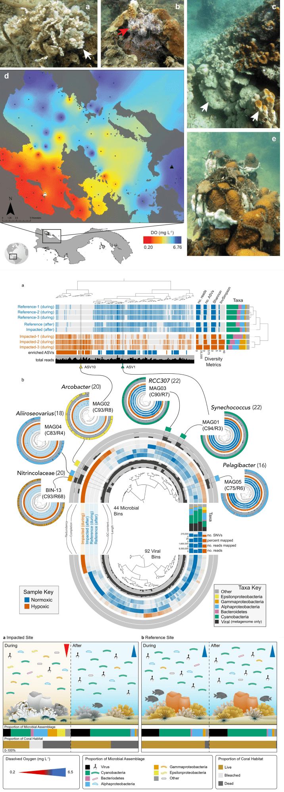
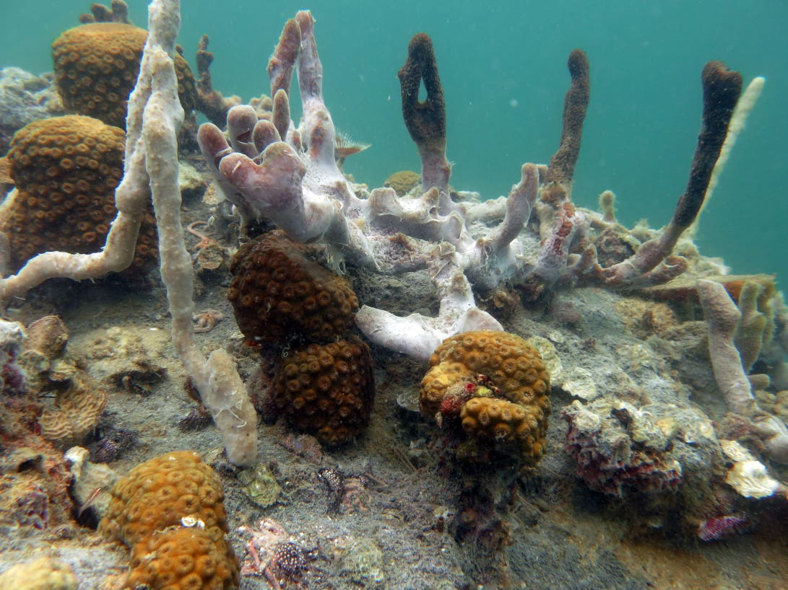
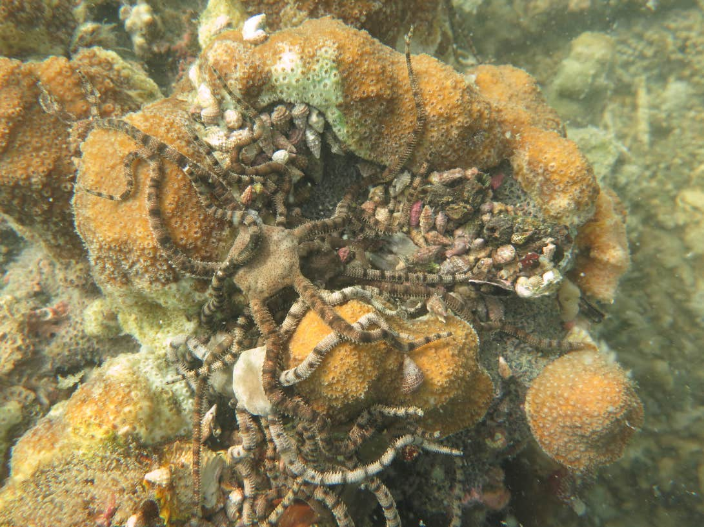

<!DOCTYPE html>

<html xmlns="http://www.w3.org/1999/xhtml" lang="" xml:lang="">

<head>
  <meta charset="utf-8"/>
  <meta name="viewport" content="width=device-width, initial-scale=1"/>
  <meta http-equiv="X-UA-Compatible" content="IE=Edge,chrome=1"/>
  <meta name="generator" content="distill" />

  <style type="text/css">
  /* Hide doc at startup (prevent jankiness while JS renders/transforms) */
  body {
    visibility: hidden;
  }
  </style>

 <!--radix_placeholder_import_source-->
 <!--/radix_placeholder_import_source-->

<style type="text/css">code{white-space: pre;}</style>
<style type="text/css" data-origin="pandoc">
pre > code.sourceCode { white-space: pre; position: relative; }
pre > code.sourceCode > span { display: inline-block; line-height: 1.25; }
pre > code.sourceCode > span:empty { height: 1.2em; }
.sourceCode { overflow: visible; }
code.sourceCode > span { color: inherit; text-decoration: inherit; }
div.sourceCode { margin: 1em 0; }
pre.sourceCode { margin: 0; }
@media screen {
div.sourceCode { overflow: auto; }
}
@media print {
pre > code.sourceCode { white-space: pre-wrap; }
pre > code.sourceCode > span { text-indent: -5em; padding-left: 5em; }
}
pre.numberSource code
  { counter-reset: source-line 0; }
pre.numberSource code > span
  { position: relative; left: -4em; counter-increment: source-line; }
pre.numberSource code > span > a:first-child::before
  { content: counter(source-line);
    position: relative; left: -1em; text-align: right; vertical-align: baseline;
    border: none; display: inline-block;
    -webkit-touch-callout: none; -webkit-user-select: none;
    -khtml-user-select: none; -moz-user-select: none;
    -ms-user-select: none; user-select: none;
    padding: 0 4px; width: 4em;
    color: #aaaaaa;
  }
pre.numberSource { margin-left: 3em; border-left: 1px solid #aaaaaa;  padding-left: 4px; }
div.sourceCode
  {   }
@media screen {
pre > code.sourceCode > span > a:first-child::before { text-decoration: underline; }
}
code span.al { color: #ff0000; } /* Alert */
code span.an { color: #008000; } /* Annotation */
code span.at { } /* Attribute */
code span.bu { } /* BuiltIn */
code span.cf { color: #0000ff; } /* ControlFlow */
code span.ch { color: #008080; } /* Char */
code span.cn { } /* Constant */
code span.co { color: #008000; } /* Comment */
code span.cv { color: #008000; } /* CommentVar */
code span.do { color: #008000; } /* Documentation */
code span.er { color: #ff0000; font-weight: bold; } /* Error */
code span.ex { } /* Extension */
code span.im { } /* Import */
code span.in { color: #008000; } /* Information */
code span.kw { color: #0000ff; } /* Keyword */
code span.op { } /* Operator */
code span.ot { color: #ff4000; } /* Other */
code span.pp { color: #ff4000; } /* Preprocessor */
code span.sc { color: #008080; } /* SpecialChar */
code span.ss { color: #008080; } /* SpecialString */
code span.st { color: #008080; } /* String */
code span.va { } /* Variable */
code span.vs { color: #008080; } /* VerbatimString */
code span.wa { color: #008000; font-weight: bold; } /* Warning */
</style>


  <!--radix_placeholder_meta_tags-->
  <title>: Hypocolypse</title>

  <meta property="description" itemprop="description" content="Raw data, data products, &amp; reproducible workflows for the study ***Rapid ecosystem-scale consequences of acute deoxygenation on a Caribbean reef***."/>

  <link rel="license" href="https://creativecommons.org/licenses/by/4.0/"/>
  <link rel="icon" type="image/vnd.microsoft.icon" href="assets/favicon.ico"/>

  <!--  https://schema.org/Article -->
  <meta property="article:published" itemprop="datePublished" content="2021-07-27"/>
  <meta property="article:created" itemprop="dateCreated" content="2021-07-27"/>
  <meta name="article:author" content="Maggie D Johnson"/>
  <meta name="article:author" content="Jarrod J Scott"/>
  <meta name="article:author" content="Matthieu Leray"/>
  <meta name="article:author" content="Noelle Lucey"/>
  <meta name="article:author" content="Lucia Rodriguez"/>
  <meta name="article:author" content="William Wied"/>
  <meta name="article:author" content="Andrew H Altieri"/>

  <!--  https://developers.facebook.com/docs/sharing/webmasters#markup -->
  <meta property="og:title" content=": Hypocolypse"/>
  <meta property="og:type" content="article"/>
  <meta property="og:description" content="Raw data, data products, &amp; reproducible workflows for the study ***Rapid ecosystem-scale consequences of acute deoxygenation on a Caribbean reef***."/>
  <meta property="og:locale" content="en_US"/>
  <meta property="og:site_name" content=""/>

  <!--  https://dev.twitter.com/cards/types/summary -->
  <meta property="twitter:card" content="summary"/>
  <meta property="twitter:title" content=": Hypocolypse"/>
  <meta property="twitter:description" content="Raw data, data products, &amp; reproducible workflows for the study ***Rapid ecosystem-scale consequences of acute deoxygenation on a Caribbean reef***."/>

  <!--/radix_placeholder_meta_tags-->
  
  <!--radix_placeholder_rmarkdown_metadata-->

  <script type="text/json" id="radix-rmarkdown-metadata">
  {"type":"list","attributes":{"names":{"type":"character","attributes":{},"value":["title","description","author","date","doi","bibliography","output","site"]}},"value":[{"type":"character","attributes":{},"value":["Hypocolypse"]},{"type":"character","attributes":{},"value":["Raw data, data products, & reproducible workflows for the study ***Rapid ecosystem-scale consequences of acute deoxygenation on a Caribbean reef***.\n"]},{"type":"list","attributes":{},"value":[{"type":"list","attributes":{"names":{"type":"character","attributes":{},"value":["name","orcid_id","url","affiliation","affiliation_url"]}},"value":[{"type":"character","attributes":{},"value":["Maggie D Johnson"]},{"type":"character","attributes":{},"value":["0000-0002-1319-2545"]},{"type":"character","attributes":{},"value":["https://www.maggiedjohnson.com/"]},{"type":"character","attributes":{},"value":["Woods Hole Oceanographic Institution"]},{"type":"character","attributes":{},"value":["https://www.whoi.edu/"]}]},{"type":"list","attributes":{"names":{"type":"character","attributes":{},"value":["name","orcid_id","url","affiliation","affiliation_url"]}},"value":[{"type":"character","attributes":{},"value":["Jarrod J Scott"]},{"type":"character","attributes":{},"value":["0000-0001-9863-1318"]},{"type":"character","attributes":{},"value":["https://metacrobe.github.io/"]},{"type":"character","attributes":{},"value":["Smithsonian Tropical Research Institute"]},{"type":"character","attributes":{},"value":["https://stri.si.edu/"]}]},{"type":"list","attributes":{"names":{"type":"character","attributes":{},"value":["name","orcid_id","url","affiliation","affiliation_url"]}},"value":[{"type":"character","attributes":{},"value":["Matthieu Leray"]},{"type":"character","attributes":{},"value":["0000-0002-7327-1878"]},{"type":"character","attributes":{},"value":["https://www.matthieuleray.website/"]},{"type":"character","attributes":{},"value":["Smithsonian Tropical Research Institute"]},{"type":"character","attributes":{},"value":["https://stri.si.edu/"]}]},{"type":"list","attributes":{"names":{"type":"character","attributes":{},"value":["name","orcid_id","affiliation","affiliation_url"]}},"value":[{"type":"character","attributes":{},"value":["Noelle Lucey"]},{"type":"character","attributes":{},"value":["0000-0002-7975-8521"]},{"type":"character","attributes":{},"value":["Smithsonian Tropical Research Institute"]},{"type":"character","attributes":{},"value":["https://stri.si.edu/"]}]},{"type":"list","attributes":{"names":{"type":"character","attributes":{},"value":["name","orcid_id","affiliation","affiliation_url"]}},"value":[{"type":"character","attributes":{},"value":["Lucia Rodriguez"]},{"type":"character","attributes":{},"value":["0000-0002-2945-9208"]},{"type":"character","attributes":{},"value":["Universidad Autónoma de Baja California"]},{"type":"character","attributes":{},"value":["http://www.uabc.mx/"]}]},{"type":"list","attributes":{"names":{"type":"character","attributes":{},"value":["name","affiliation","affiliation_url"]}},"value":[{"type":"character","attributes":{},"value":["William Wied"]},{"type":"character","attributes":{},"value":["Florida International University"]},{"type":"character","attributes":{},"value":["https://www.fiu.edu/"]}]},{"type":"list","attributes":{"names":{"type":"character","attributes":{},"value":["name","orcid_id","url","affiliation","affiliation_url"]}},"value":[{"type":"character","attributes":{},"value":["Andrew H Altieri"]},{"type":"character","attributes":{},"value":["0000-0001-7439-8742"]},{"type":"character","attributes":{},"value":["https://www.altierilab.org"]},{"type":"character","attributes":{},"value":["University of Florida"]},{"type":"character","attributes":{},"value":["https://www.essie.ufl.edu/environmental-engineering-sciences/"]}]}]},{"type":"character","attributes":{},"value":["July 27, 2021"]},{"type":"character","attributes":{},"value":["10.1038/s41467-021-24777-3"]},{"type":"character","attributes":{},"value":["assets/cite.bib"]},{"type":"list","attributes":{"names":{"type":"character","attributes":{},"value":["distill::distill_article"]}},"value":[{"type":"list","attributes":{"names":{"type":"character","attributes":{},"value":["includes","toc"]}},"value":[{"type":"list","attributes":{"names":{"type":"character","attributes":{},"value":["in_header"]}},"value":[{"type":"character","attributes":{},"value":["assets/header.html"]}]},{"type":"logical","attributes":{},"value":[true]}]}]},{"type":"character","attributes":{},"value":["distill::distill_website"]}]}
  </script>
  <!--/radix_placeholder_rmarkdown_metadata-->
  <!--radix_placeholder_navigation_in_header-->
  <meta name="distill:offset" content=""/>

  <script type="application/javascript">

    window.headroom_prevent_pin = false;

    window.document.addEventListener("DOMContentLoaded", function (event) {

      // initialize headroom for banner
      var header = $('header').get(0);
      var headerHeight = header.offsetHeight;
      var headroom = new Headroom(header, {
        tolerance: 5,
        onPin : function() {
          if (window.headroom_prevent_pin) {
            window.headroom_prevent_pin = false;
            headroom.unpin();
          }
        }
      });
      headroom.init();
      if(window.location.hash)
        headroom.unpin();
      $(header).addClass('headroom--transition');

      // offset scroll location for banner on hash change
      // (see: https://github.com/WickyNilliams/headroom.js/issues/38)
      window.addEventListener("hashchange", function(event) {
        window.scrollTo(0, window.pageYOffset - (headerHeight + 25));
      });

      // responsive menu
      $('.distill-site-header').each(function(i, val) {
        var topnav = $(this);
        var toggle = topnav.find('.nav-toggle');
        toggle.on('click', function() {
          topnav.toggleClass('responsive');
        });
      });

      // nav dropdowns
      $('.nav-dropbtn').click(function(e) {
        $(this).next('.nav-dropdown-content').toggleClass('nav-dropdown-active');
        $(this).parent().siblings('.nav-dropdown')
           .children('.nav-dropdown-content').removeClass('nav-dropdown-active');
      });
      $("body").click(function(e){
        $('.nav-dropdown-content').removeClass('nav-dropdown-active');
      });
      $(".nav-dropdown").click(function(e){
        e.stopPropagation();
      });
    });
  </script>

  <style type="text/css">

  /* Theme (user-documented overrideables for nav appearance) */

  .distill-site-nav {
    color: rgba(255, 255, 255, 0.8);
    background-color: #0F2E3D;
    font-size: 15px;
    font-weight: 300;
  }

  .distill-site-nav a {
    color: inherit;
    text-decoration: none;
  }

  .distill-site-nav a:hover {
    color: white;
  }

  @media print {
    .distill-site-nav {
      display: none;
    }
  }

  .distill-site-header {

  }

  .distill-site-footer {

  }


  /* Site Header */

  .distill-site-header {
    width: 100%;
    box-sizing: border-box;
    z-index: 3;
  }

  .distill-site-header .nav-left {
    display: inline-block;
    margin-left: 8px;
  }

  @media screen and (max-width: 768px) {
    .distill-site-header .nav-left {
      margin-left: 0;
    }
  }


  .distill-site-header .nav-right {
    float: right;
    margin-right: 8px;
  }

  .distill-site-header a,
  .distill-site-header .title {
    display: inline-block;
    text-align: center;
    padding: 14px 10px 14px 10px;
  }

  .distill-site-header .title {
    font-size: 18px;
    min-width: 150px;
  }

  .distill-site-header .logo {
    padding: 0;
  }

  .distill-site-header .logo img {
    display: none;
    max-height: 20px;
    width: auto;
    margin-bottom: -4px;
  }

  .distill-site-header .nav-image img {
    max-height: 18px;
    width: auto;
    display: inline-block;
    margin-bottom: -3px;
  }


  @media screen and (min-width: 1000px) {
    .distill-site-header .logo img {
      display: inline-block;
    }
    .distill-site-header .nav-left {
      margin-left: 20px;
    }
    .distill-site-header .nav-right {
      margin-right: 20px;
    }
    .distill-site-header .title {
      padding-left: 12px;
    }
  }


  .distill-site-header .nav-toggle {
    display: none;
  }

  .nav-dropdown {
    display: inline-block;
    position: relative;
  }

  .nav-dropdown .nav-dropbtn {
    border: none;
    outline: none;
    color: rgba(255, 255, 255, 0.8);
    padding: 16px 10px;
    background-color: transparent;
    font-family: inherit;
    font-size: inherit;
    font-weight: inherit;
    margin: 0;
    margin-top: 1px;
    z-index: 2;
  }

  .nav-dropdown-content {
    display: none;
    position: absolute;
    background-color: white;
    min-width: 200px;
    border: 1px solid rgba(0,0,0,0.15);
    border-radius: 4px;
    box-shadow: 0px 8px 16px 0px rgba(0,0,0,0.1);
    z-index: 1;
    margin-top: 2px;
    white-space: nowrap;
    padding-top: 4px;
    padding-bottom: 4px;
  }

  .nav-dropdown-content hr {
    margin-top: 4px;
    margin-bottom: 4px;
    border: none;
    border-bottom: 1px solid rgba(0, 0, 0, 0.1);
  }

  .nav-dropdown-active {
    display: block;
  }

  .nav-dropdown-content a, .nav-dropdown-content .nav-dropdown-header {
    color: black;
    padding: 6px 24px;
    text-decoration: none;
    display: block;
    text-align: left;
  }

  .nav-dropdown-content .nav-dropdown-header {
    display: block;
    padding: 5px 24px;
    padding-bottom: 0;
    text-transform: uppercase;
    font-size: 14px;
    color: #999999;
    white-space: nowrap;
  }

  .nav-dropdown:hover .nav-dropbtn {
    color: white;
  }

  .nav-dropdown-content a:hover {
    background-color: #ddd;
    color: black;
  }

  .nav-right .nav-dropdown-content {
    margin-left: -45%;
    right: 0;
  }

  @media screen and (max-width: 768px) {
    .distill-site-header a, .distill-site-header .nav-dropdown  {display: none;}
    .distill-site-header a.nav-toggle {
      float: right;
      display: block;
    }
    .distill-site-header .title {
      margin-left: 0;
    }
    .distill-site-header .nav-right {
      margin-right: 0;
    }
    .distill-site-header {
      overflow: hidden;
    }
    .nav-right .nav-dropdown-content {
      margin-left: 0;
    }
  }


  @media screen and (max-width: 768px) {
    .distill-site-header.responsive {position: relative; min-height: 500px; }
    .distill-site-header.responsive a.nav-toggle {
      position: absolute;
      right: 0;
      top: 0;
    }
    .distill-site-header.responsive a,
    .distill-site-header.responsive .nav-dropdown {
      display: block;
      text-align: left;
    }
    .distill-site-header.responsive .nav-left,
    .distill-site-header.responsive .nav-right {
      width: 100%;
    }
    .distill-site-header.responsive .nav-dropdown {float: none;}
    .distill-site-header.responsive .nav-dropdown-content {position: relative;}
    .distill-site-header.responsive .nav-dropdown .nav-dropbtn {
      display: block;
      width: 100%;
      text-align: left;
    }
  }

  /* Site Footer */

  .distill-site-footer {
    width: 100%;
    overflow: hidden;
    box-sizing: border-box;
    z-index: 3;
    margin-top: 30px;
    padding-top: 30px;
    padding-bottom: 30px;
    text-align: center;
  }

  /* Headroom */

  d-title {
    padding-top: 6rem;
  }

  @media print {
    d-title {
      padding-top: 4rem;
    }
  }

  .headroom {
    z-index: 1000;
    position: fixed;
    top: 0;
    left: 0;
    right: 0;
  }

  .headroom--transition {
    transition: all .4s ease-in-out;
  }

  .headroom--unpinned {
    top: -100px;
  }

  .headroom--pinned {
    top: 0;
  }

  /* adjust viewport for navbar height */
  /* helps vertically center bootstrap (non-distill) content */
  .min-vh-100 {
    min-height: calc(100vh - 100px) !important;
  }

  </style>

  <script src="site_libs/jquery-3.6.0/jquery-3.6.0.min.js"></script>
  <link href="site_libs/font-awesome-5.1.0/css/all.css" rel="stylesheet"/>
  <link href="site_libs/font-awesome-5.1.0/css/v4-shims.css" rel="stylesheet"/>
  <script src="site_libs/headroom-0.9.4/headroom.min.js"></script>
  <script src="site_libs/autocomplete-0.37.1/autocomplete.min.js"></script>
  <script src="site_libs/fuse-6.4.1/fuse.min.js"></script>

  <script type="application/javascript">

  function getMeta(metaName) {
    var metas = document.getElementsByTagName('meta');
    for (let i = 0; i < metas.length; i++) {
      if (metas[i].getAttribute('name') === metaName) {
        return metas[i].getAttribute('content');
      }
    }
    return '';
  }

  function offsetURL(url) {
    var offset = getMeta('distill:offset');
    return offset ? offset + '/' + url : url;
  }

  function createFuseIndex() {

    // create fuse index
    var options = {
      keys: [
        { name: 'title', weight: 20 },
        { name: 'categories', weight: 15 },
        { name: 'description', weight: 10 },
        { name: 'contents', weight: 5 },
      ],
      ignoreLocation: true,
      threshold: 0
    };
    var fuse = new window.Fuse([], options);

    // fetch the main search.json
    return fetch(offsetURL('search.json'))
      .then(function(response) {
        if (response.status == 200) {
          return response.json().then(function(json) {
            // index main articles
            json.articles.forEach(function(article) {
              fuse.add(article);
            });
            // download collections and index their articles
            return Promise.all(json.collections.map(function(collection) {
              return fetch(offsetURL(collection)).then(function(response) {
                if (response.status === 200) {
                  return response.json().then(function(articles) {
                    articles.forEach(function(article) {
                      fuse.add(article);
                    });
                  })
                } else {
                  return Promise.reject(
                    new Error('Unexpected status from search index request: ' +
                              response.status)
                  );
                }
              });
            })).then(function() {
              return fuse;
            });
          });

        } else {
          return Promise.reject(
            new Error('Unexpected status from search index request: ' +
                        response.status)
          );
        }
      });
  }

  window.document.addEventListener("DOMContentLoaded", function (event) {

    // get search element (bail if we don't have one)
    var searchEl = window.document.getElementById('distill-search');
    if (!searchEl)
      return;

    createFuseIndex()
      .then(function(fuse) {

        // make search box visible
        searchEl.classList.remove('hidden');

        // initialize autocomplete
        var options = {
          autoselect: true,
          hint: false,
          minLength: 2,
        };
        window.autocomplete(searchEl, options, [{
          source: function(query, callback) {
            const searchOptions = {
              isCaseSensitive: false,
              shouldSort: true,
              minMatchCharLength: 2,
              limit: 10,
            };
            var results = fuse.search(query, searchOptions);
            callback(results
              .map(function(result) { return result.item; })
            );
          },
          templates: {
            suggestion: function(suggestion) {
              var img = suggestion.preview && Object.keys(suggestion.preview).length > 0
                ? ``
                : '';
              var html = `
                <div class="search-item">
                  <h3>${suggestion.title}</h3>
                  <div class="search-item-description">
                    ${suggestion.description || ''}
                  </div>
                  <div class="search-item-preview">
                    ${img}
                  </div>
                </div>
              `;
              return html;
            }
          }
        }]).on('autocomplete:selected', function(event, suggestion) {
          window.location.href = offsetURL(suggestion.path);
        });
        // remove inline display style on autocompleter (we want to
        // manage responsive display via css)
        $('.algolia-autocomplete').css("display", "");
      })
      .catch(function(error) {
        console.log(error);
      });

  });

  </script>

  <style type="text/css">

  .nav-search {
    font-size: x-small;
  }

  /* Algolioa Autocomplete */

  .algolia-autocomplete {
    display: inline-block;
    margin-left: 10px;
    vertical-align: sub;
    background-color: white;
    color: black;
    padding: 6px;
    padding-top: 8px;
    padding-bottom: 0;
    border-radius: 6px;
    border: 1px #0F2E3D solid;
    width: 180px;
  }


  @media screen and (max-width: 768px) {
    .distill-site-nav .algolia-autocomplete {
      display: none;
      visibility: hidden;
    }
    .distill-site-nav.responsive .algolia-autocomplete {
      display: inline-block;
      visibility: visible;
    }
    .distill-site-nav.responsive .algolia-autocomplete .aa-dropdown-menu {
      margin-left: 0;
      width: 400px;
      max-height: 400px;
    }
  }

  .algolia-autocomplete .aa-input, .algolia-autocomplete .aa-hint {
    width: 90%;
    outline: none;
    border: none;
  }

  .algolia-autocomplete .aa-hint {
    color: #999;
  }
  .algolia-autocomplete .aa-dropdown-menu {
    width: 550px;
    max-height: 70vh;
    overflow-x: visible;
    overflow-y: scroll;
    padding: 5px;
    margin-top: 3px;
    margin-left: -150px;
    background-color: #fff;
    border-radius: 5px;
    border: 1px solid #999;
    border-top: none;
  }

  .algolia-autocomplete .aa-dropdown-menu .aa-suggestion {
    cursor: pointer;
    padding: 5px 4px;
    border-bottom: 1px solid #eee;
  }

  .algolia-autocomplete .aa-dropdown-menu .aa-suggestion:last-of-type {
    border-bottom: none;
    margin-bottom: 2px;
  }

  .algolia-autocomplete .aa-dropdown-menu .aa-suggestion .search-item {
    overflow: hidden;
    font-size: 0.8em;
    line-height: 1.4em;
  }

  .algolia-autocomplete .aa-dropdown-menu .aa-suggestion .search-item h3 {
    font-size: 1rem;
    margin-block-start: 0;
    margin-block-end: 5px;
  }

  .algolia-autocomplete .aa-dropdown-menu .aa-suggestion .search-item-description {
    display: inline-block;
    overflow: hidden;
    height: 2.8em;
    width: 80%;
    margin-right: 4%;
  }

  .algolia-autocomplete .aa-dropdown-menu .aa-suggestion .search-item-preview {
    display: inline-block;
    width: 15%;
  }

  .algolia-autocomplete .aa-dropdown-menu .aa-suggestion .search-item-preview img {
    height: 3em;
    width: auto;
    display: none;
  }

  .algolia-autocomplete .aa-dropdown-menu .aa-suggestion .search-item-preview img[src] {
    display: initial;
  }

  .algolia-autocomplete .aa-dropdown-menu .aa-suggestion.aa-cursor {
    background-color: #eee;
  }
  .algolia-autocomplete .aa-dropdown-menu .aa-suggestion em {
    font-weight: bold;
    font-style: normal;
  }

  </style>


  <!--/radix_placeholder_navigation_in_header-->
  <!--radix_placeholder_distill-->

  <style type="text/css">

  body {
    background-color: white;
  }

  .pandoc-table {
    width: 100%;
  }

  .pandoc-table>caption {
    margin-bottom: 10px;
  }

  .pandoc-table th:not([align]) {
    text-align: left;
  }

  .pagedtable-footer {
    font-size: 15px;
  }

  d-byline .byline {
    grid-template-columns: 2fr 2fr;
  }

  d-byline .byline h3 {
    margin-block-start: 1.5em;
  }

  d-byline .byline .authors-affiliations h3 {
    margin-block-start: 0.5em;
  }

  .authors-affiliations .orcid-id {
    width: 16px;
    height:16px;
    margin-left: 4px;
    margin-right: 4px;
    vertical-align: middle;
    padding-bottom: 2px;
  }

  d-title .dt-tags {
    margin-top: 1em;
    grid-column: text;
  }

  .dt-tags .dt-tag {
    text-decoration: none;
    display: inline-block;
    color: rgba(0,0,0,0.6);
    padding: 0em 0.4em;
    margin-right: 0.5em;
    margin-bottom: 0.4em;
    font-size: 70%;
    border: 1px solid rgba(0,0,0,0.2);
    border-radius: 3px;
    text-transform: uppercase;
    font-weight: 500;
  }

  d-article table.gt_table td,
  d-article table.gt_table th {
    border-bottom: none;
  }

  .html-widget {
    margin-bottom: 2.0em;
  }

  .l-screen-inset {
    padding-right: 16px;
  }

  .l-screen .caption {
    margin-left: 10px;
  }

  .shaded {
    background: rgb(247, 247, 247);
    padding-top: 20px;
    padding-bottom: 20px;
    border-top: 1px solid rgba(0, 0, 0, 0.1);
    border-bottom: 1px solid rgba(0, 0, 0, 0.1);
  }

  .shaded .html-widget {
    margin-bottom: 0;
    border: 1px solid rgba(0, 0, 0, 0.1);
  }

  .shaded .shaded-content {
    background: white;
  }

  .text-output {
    margin-top: 0;
    line-height: 1.5em;
  }

  .hidden {
    display: none !important;
  }

  d-article {
    padding-top: 2.5rem;
    padding-bottom: 30px;
  }

  d-appendix {
    padding-top: 30px;
  }

  d-article>p>img {
    width: 100%;
  }

  d-article h2 {
    margin: 1rem 0 1.5rem 0;
  }

  d-article h3 {
    margin-top: 1.5rem;
  }

  d-article iframe {
    border: 1px solid rgba(0, 0, 0, 0.1);
    margin-bottom: 2.0em;
    width: 100%;
  }

  /* Tweak code blocks */

  d-article div.sourceCode code,
  d-article pre code {
    font-family: Consolas, Monaco, 'Andale Mono', 'Ubuntu Mono', monospace;
  }

  d-article pre,
  d-article div.sourceCode,
  d-article div.sourceCode pre {
    overflow: auto;
  }

  d-article div.sourceCode {
    background-color: white;
  }

  d-article div.sourceCode pre {
    padding-left: 10px;
    font-size: 12px;
    border-left: 2px solid rgba(0,0,0,0.1);
  }

  d-article pre {
    font-size: 12px;
    color: black;
    background: none;
    margin-top: 0;
    text-align: left;
    white-space: pre;
    word-spacing: normal;
    word-break: normal;
    word-wrap: normal;
    line-height: 1.5;

    -moz-tab-size: 4;
    -o-tab-size: 4;
    tab-size: 4;

    -webkit-hyphens: none;
    -moz-hyphens: none;
    -ms-hyphens: none;
    hyphens: none;
  }

  d-article pre a {
    border-bottom: none;
  }

  d-article pre a:hover {
    border-bottom: none;
    text-decoration: underline;
  }

  d-article details {
    grid-column: text;
    margin-bottom: 0.8em;
  }

  @media(min-width: 768px) {

  d-article pre,
  d-article div.sourceCode,
  d-article div.sourceCode pre {
    overflow: visible !important;
  }

  d-article div.sourceCode pre {
    padding-left: 18px;
    font-size: 14px;
  }

  d-article pre {
    font-size: 14px;
  }

  }

  figure img.external {
    background: white;
    border: 1px solid rgba(0, 0, 0, 0.1);
    box-shadow: 0 1px 8px rgba(0, 0, 0, 0.1);
    padding: 18px;
    box-sizing: border-box;
  }

  /* CSS for d-contents */

  .d-contents {
    grid-column: text;
    color: rgba(0,0,0,0.8);
    font-size: 0.9em;
    padding-bottom: 1em;
    margin-bottom: 1em;
    padding-bottom: 0.5em;
    margin-bottom: 1em;
    padding-left: 0.25em;
    justify-self: start;
  }

  @media(min-width: 1000px) {
    .d-contents.d-contents-float {
      height: 0;
      grid-column-start: 1;
      grid-column-end: 4;
      justify-self: center;
      padding-right: 3em;
      padding-left: 2em;
    }
  }

  .d-contents nav h3 {
    font-size: 18px;
    margin-top: 0;
    margin-bottom: 1em;
  }

  .d-contents li {
    list-style-type: none
  }

  .d-contents nav > ul {
    padding-left: 0;
  }

  .d-contents ul {
    padding-left: 1em
  }

  .d-contents nav ul li {
    margin-top: 0.6em;
    margin-bottom: 0.2em;
  }

  .d-contents nav a {
    font-size: 13px;
    border-bottom: none;
    text-decoration: none
    color: rgba(0, 0, 0, 0.8);
  }

  .d-contents nav a:hover {
    text-decoration: underline solid rgba(0, 0, 0, 0.6)
  }

  .d-contents nav > ul > li > a {
    font-weight: 600;
  }

  .d-contents nav > ul > li > ul {
    font-weight: inherit;
  }

  .d-contents nav > ul > li > ul > li {
    margin-top: 0.2em;
  }


  .d-contents nav ul {
    margin-top: 0;
    margin-bottom: 0.25em;
  }

  .d-article-with-toc h2:nth-child(2) {
    margin-top: 0;
  }


  /* Figure */

  .figure {
    position: relative;
    margin-bottom: 2.5em;
    margin-top: 1.5em;
  }

  .figure img {
    width: 100%;
  }

  .figure .caption {
    color: rgba(0, 0, 0, 0.6);
    font-size: 12px;
    line-height: 1.5em;
  }

  .figure img.external {
    background: white;
    border: 1px solid rgba(0, 0, 0, 0.1);
    box-shadow: 0 1px 8px rgba(0, 0, 0, 0.1);
    padding: 18px;
    box-sizing: border-box;
  }

  .figure .caption a {
    color: rgba(0, 0, 0, 0.6);
  }

  .figure .caption b,
  .figure .caption strong, {
    font-weight: 600;
    color: rgba(0, 0, 0, 1.0);
  }

  /* Citations */

  d-article .citation {
    color: inherit;
    cursor: inherit;
  }

  div.hanging-indent{
    margin-left: 1em; text-indent: -1em;
  }

  /* Citation hover box */

  .tippy-box[data-theme~=light-border] {
    background-color: rgba(250, 250, 250, 0.95);
  }

  .tippy-content > p {
    margin-bottom: 0;
    padding: 2px;
  }


  /* Tweak 1000px media break to show more text */

  @media(min-width: 1000px) {
    .base-grid,
    distill-header,
    d-title,
    d-abstract,
    d-article,
    d-appendix,
    distill-appendix,
    d-byline,
    d-footnote-list,
    d-citation-list,
    distill-footer {
      grid-template-columns: [screen-start] 1fr [page-start kicker-start] 80px [middle-start] 50px [text-start kicker-end] 65px 65px 65px 65px 65px 65px 65px 65px [text-end gutter-start] 65px [middle-end] 65px [page-end gutter-end] 1fr [screen-end];
      grid-column-gap: 16px;
    }

    .grid {
      grid-column-gap: 16px;
    }

    d-article {
      font-size: 1.06rem;
      line-height: 1.7em;
    }
    figure .caption, .figure .caption, figure figcaption {
      font-size: 13px;
    }
  }

  @media(min-width: 1180px) {
    .base-grid,
    distill-header,
    d-title,
    d-abstract,
    d-article,
    d-appendix,
    distill-appendix,
    d-byline,
    d-footnote-list,
    d-citation-list,
    distill-footer {
      grid-template-columns: [screen-start] 1fr [page-start kicker-start] 60px [middle-start] 60px [text-start kicker-end] 60px 60px 60px 60px 60px 60px 60px 60px [text-end gutter-start] 60px [middle-end] 60px [page-end gutter-end] 1fr [screen-end];
      grid-column-gap: 32px;
    }

    .grid {
      grid-column-gap: 32px;
    }
  }


  /* Get the citation styles for the appendix (not auto-injected on render since
     we do our own rendering of the citation appendix) */

  d-appendix .citation-appendix,
  .d-appendix .citation-appendix {
    font-size: 11px;
    line-height: 15px;
    border-left: 1px solid rgba(0, 0, 0, 0.1);
    padding-left: 18px;
    border: 1px solid rgba(0,0,0,0.1);
    background: rgba(0, 0, 0, 0.02);
    padding: 10px 18px;
    border-radius: 3px;
    color: rgba(150, 150, 150, 1);
    overflow: hidden;
    margin-top: -12px;
    white-space: pre-wrap;
    word-wrap: break-word;
  }

  /* Include appendix styles here so they can be overridden */

  d-appendix {
    contain: layout style;
    font-size: 0.8em;
    line-height: 1.7em;
    margin-top: 60px;
    margin-bottom: 0;
    border-top: 1px solid rgba(0, 0, 0, 0.1);
    color: rgba(0,0,0,0.5);
    padding-top: 60px;
    padding-bottom: 48px;
  }

  d-appendix h3 {
    grid-column: page-start / text-start;
    font-size: 15px;
    font-weight: 500;
    margin-top: 1em;
    margin-bottom: 0;
    color: rgba(0,0,0,0.65);
  }

  d-appendix h3 + * {
    margin-top: 1em;
  }

  d-appendix ol {
    padding: 0 0 0 15px;
  }

  @media (min-width: 768px) {
    d-appendix ol {
      padding: 0 0 0 30px;
      margin-left: -30px;
    }
  }

  d-appendix li {
    margin-bottom: 1em;
  }

  d-appendix a {
    color: rgba(0, 0, 0, 0.6);
  }

  d-appendix > * {
    grid-column: text;
  }

  d-appendix > d-footnote-list,
  d-appendix > d-citation-list,
  d-appendix > distill-appendix {
    grid-column: screen;
  }

  /* Include footnote styles here so they can be overridden */

  d-footnote-list {
    contain: layout style;
  }

  d-footnote-list > * {
    grid-column: text;
  }

  d-footnote-list a.footnote-backlink {
    color: rgba(0,0,0,0.3);
    padding-left: 0.5em;
  }


  /* Anchor.js */

  .anchorjs-link {
    /*transition: all .25s linear; */
    text-decoration: none;
    border-bottom: none;
  }
  *:hover > .anchorjs-link {
    margin-left: -1.125em !important;
    text-decoration: none;
    border-bottom: none;
  }

  /* Social footer */

  .social_footer {
    margin-top: 30px;
    margin-bottom: 0;
    color: rgba(0,0,0,0.67);
  }

  .disqus-comments {
    margin-right: 30px;
  }

  .disqus-comment-count {
    border-bottom: 1px solid rgba(0, 0, 0, 0.4);
    cursor: pointer;
  }

  #disqus_thread {
    margin-top: 30px;
  }

  .article-sharing a {
    border-bottom: none;
    margin-right: 8px;
  }

  .article-sharing a:hover {
    border-bottom: none;
  }

  .sidebar-section.subscribe {
    font-size: 12px;
    line-height: 1.6em;
  }

  .subscribe p {
    margin-bottom: 0.5em;
  }


  .article-footer .subscribe {
    font-size: 15px;
    margin-top: 45px;
  }


  .sidebar-section.custom {
    font-size: 12px;
    line-height: 1.6em;
  }

  .custom p {
    margin-bottom: 0.5em;
  }

  /* Styles for listing layout (hide title) */
  .layout-listing d-title, .layout-listing .d-title {
    display: none;
  }

  /* Styles for posts lists (not auto-injected) */


  .posts-with-sidebar {
    padding-left: 45px;
    padding-right: 45px;
  }

  .posts-list .description h2,
  .posts-list .description p {
    font-family: -apple-system, BlinkMacSystemFont, "Segoe UI", Roboto, Oxygen, Ubuntu, Cantarell, "Fira Sans", "Droid Sans", "Helvetica Neue", Arial, sans-serif;
  }

  .posts-list .description h2 {
    font-weight: 700;
    border-bottom: none;
    padding-bottom: 0;
  }

  .posts-list h2.post-tag {
    border-bottom: 1px solid rgba(0, 0, 0, 0.2);
    padding-bottom: 12px;
  }
  .posts-list {
    margin-top: 60px;
    margin-bottom: 24px;
  }

  .posts-list .post-preview {
    text-decoration: none;
    overflow: hidden;
    display: block;
    border-bottom: 1px solid rgba(0, 0, 0, 0.1);
    padding: 24px 0;
  }

  .post-preview-last {
    border-bottom: none !important;
  }

  .posts-list .posts-list-caption {
    grid-column: screen;
    font-weight: 400;
  }

  .posts-list .post-preview h2 {
    margin: 0 0 6px 0;
    line-height: 1.2em;
    font-style: normal;
    font-size: 24px;
  }

  .posts-list .post-preview p {
    margin: 0 0 12px 0;
    line-height: 1.4em;
    font-size: 16px;
  }

  .posts-list .post-preview .thumbnail {
    box-sizing: border-box;
    margin-bottom: 24px;
    position: relative;
    max-width: 500px;
  }
  .posts-list .post-preview img {
    width: 100%;
    display: block;
  }

  .posts-list .metadata {
    font-size: 12px;
    line-height: 1.4em;
    margin-bottom: 18px;
  }

  .posts-list .metadata > * {
    display: inline-block;
  }

  .posts-list .metadata .publishedDate {
    margin-right: 2em;
  }

  .posts-list .metadata .dt-authors {
    display: block;
    margin-top: 0.3em;
    margin-right: 2em;
  }

  .posts-list .dt-tags {
    display: block;
    line-height: 1em;
  }

  .posts-list .dt-tags .dt-tag {
    display: inline-block;
    color: rgba(0,0,0,0.6);
    padding: 0.3em 0.4em;
    margin-right: 0.2em;
    margin-bottom: 0.4em;
    font-size: 60%;
    border: 1px solid rgba(0,0,0,0.2);
    border-radius: 3px;
    text-transform: uppercase;
    font-weight: 500;
  }

  .posts-list img {
    opacity: 1;
  }

  .posts-list img[data-src] {
    opacity: 0;
  }

  .posts-more {
    clear: both;
  }


  .posts-sidebar {
    font-size: 16px;
  }

  .posts-sidebar h3 {
    font-size: 16px;
    margin-top: 0;
    margin-bottom: 0.5em;
    font-weight: 400;
    text-transform: uppercase;
  }

  .sidebar-section {
    margin-bottom: 30px;
  }

  .categories ul {
    list-style-type: none;
    margin: 0;
    padding: 0;
  }

  .categories li {
    color: rgba(0, 0, 0, 0.8);
    margin-bottom: 0;
  }

  .categories li>a {
    border-bottom: none;
  }

  .categories li>a:hover {
    border-bottom: 1px solid rgba(0, 0, 0, 0.4);
  }

  .categories .active {
    font-weight: 600;
  }

  .categories .category-count {
    color: rgba(0, 0, 0, 0.4);
  }


  @media(min-width: 768px) {
    .posts-list .post-preview h2 {
      font-size: 26px;
    }
    .posts-list .post-preview .thumbnail {
      float: right;
      width: 30%;
      margin-bottom: 0;
    }
    .posts-list .post-preview .description {
      float: left;
      width: 45%;
    }
    .posts-list .post-preview .metadata {
      float: left;
      width: 20%;
      margin-top: 8px;
    }
    .posts-list .post-preview p {
      margin: 0 0 12px 0;
      line-height: 1.5em;
      font-size: 16px;
    }
    .posts-with-sidebar .posts-list {
      float: left;
      width: 75%;
    }
    .posts-with-sidebar .posts-sidebar {
      float: right;
      width: 20%;
      margin-top: 60px;
      padding-top: 24px;
      padding-bottom: 24px;
    }
  }


  /* Improve display for browsers without grid (IE/Edge <= 15) */

  .downlevel {
    line-height: 1.6em;
    font-family: -apple-system, BlinkMacSystemFont, "Segoe UI", Roboto, Oxygen, Ubuntu, Cantarell, "Fira Sans", "Droid Sans", "Helvetica Neue", Arial, sans-serif;
    margin: 0;
  }

  .downlevel .d-title {
    padding-top: 6rem;
    padding-bottom: 1.5rem;
  }

  .downlevel .d-title h1 {
    font-size: 50px;
    font-weight: 700;
    line-height: 1.1em;
    margin: 0 0 0.5rem;
  }

  .downlevel .d-title p {
    font-weight: 300;
    font-size: 1.2rem;
    line-height: 1.55em;
    margin-top: 0;
  }

  .downlevel .d-byline {
    padding-top: 0.8em;
    padding-bottom: 0.8em;
    font-size: 0.8rem;
    line-height: 1.8em;
  }

  .downlevel .section-separator {
    border: none;
    border-top: 1px solid rgba(0, 0, 0, 0.1);
  }

  .downlevel .d-article {
    font-size: 1.06rem;
    line-height: 1.7em;
    padding-top: 1rem;
    padding-bottom: 2rem;
  }


  .downlevel .d-appendix {
    padding-left: 0;
    padding-right: 0;
    max-width: none;
    font-size: 0.8em;
    line-height: 1.7em;
    margin-bottom: 0;
    color: rgba(0,0,0,0.5);
    padding-top: 40px;
    padding-bottom: 48px;
  }

  .downlevel .footnotes ol {
    padding-left: 13px;
  }

  .downlevel .base-grid,
  .downlevel .distill-header,
  .downlevel .d-title,
  .downlevel .d-abstract,
  .downlevel .d-article,
  .downlevel .d-appendix,
  .downlevel .distill-appendix,
  .downlevel .d-byline,
  .downlevel .d-footnote-list,
  .downlevel .d-citation-list,
  .downlevel .distill-footer,
  .downlevel .appendix-bottom,
  .downlevel .posts-container {
    padding-left: 40px;
    padding-right: 40px;
  }

  @media(min-width: 768px) {
    .downlevel .base-grid,
    .downlevel .distill-header,
    .downlevel .d-title,
    .downlevel .d-abstract,
    .downlevel .d-article,
    .downlevel .d-appendix,
    .downlevel .distill-appendix,
    .downlevel .d-byline,
    .downlevel .d-footnote-list,
    .downlevel .d-citation-list,
    .downlevel .distill-footer,
    .downlevel .appendix-bottom,
    .downlevel .posts-container {
    padding-left: 150px;
    padding-right: 150px;
    max-width: 900px;
  }
  }

  .downlevel pre code {
    display: block;
    border-left: 2px solid rgba(0, 0, 0, .1);
    padding: 0 0 0 20px;
    font-size: 14px;
  }

  .downlevel code, .downlevel pre {
    color: black;
    background: none;
    font-family: Consolas, Monaco, 'Andale Mono', 'Ubuntu Mono', monospace;
    text-align: left;
    white-space: pre;
    word-spacing: normal;
    word-break: normal;
    word-wrap: normal;
    line-height: 1.5;

    -moz-tab-size: 4;
    -o-tab-size: 4;
    tab-size: 4;

    -webkit-hyphens: none;
    -moz-hyphens: none;
    -ms-hyphens: none;
    hyphens: none;
  }

  .downlevel .posts-list .post-preview {
    color: inherit;
  }


  </style>

  <script type="application/javascript">

  function is_downlevel_browser() {
    if (bowser.isUnsupportedBrowser({ msie: "12", msedge: "16"},
                                   window.navigator.userAgent)) {
      return true;
    } else {
      return window.load_distill_framework === undefined;
    }
  }

  // show body when load is complete
  function on_load_complete() {

    // add anchors
    if (window.anchors) {
      window.anchors.options.placement = 'left';
      window.anchors.add('d-article > h2, d-article > h3, d-article > h4, d-article > h5');
    }


    // set body to visible
    document.body.style.visibility = 'visible';

    // force redraw for leaflet widgets
    if (window.HTMLWidgets) {
      var maps = window.HTMLWidgets.findAll(".leaflet");
      $.each(maps, function(i, el) {
        var map = this.getMap();
        map.invalidateSize();
        map.eachLayer(function(layer) {
          if (layer instanceof L.TileLayer)
            layer.redraw();
        });
      });
    }

    // trigger 'shown' so htmlwidgets resize
    $('d-article').trigger('shown');
  }

  function init_distill() {

    init_common();

    // create front matter
    var front_matter = $('<d-front-matter></d-front-matter>');
    $('#distill-front-matter').wrap(front_matter);

    // create d-title
    $('.d-title').changeElementType('d-title');

    // create d-byline
    var byline = $('<d-byline></d-byline>');
    $('.d-byline').replaceWith(byline);

    // create d-article
    var article = $('<d-article></d-article>');
    $('.d-article').wrap(article).children().unwrap();

    // move posts container into article
    $('.posts-container').appendTo($('d-article'));

    // create d-appendix
    $('.d-appendix').changeElementType('d-appendix');

    // flag indicating that we have appendix items
    var appendix = $('.appendix-bottom').children('h3').length > 0;

    // replace footnotes with <d-footnote>
    $('.footnote-ref').each(function(i, val) {
      appendix = true;
      var href = $(this).attr('href');
      var id = href.replace('#', '');
      var fn = $('#' + id);
      var fn_p = $('#' + id + '>p');
      fn_p.find('.footnote-back').remove();
      var text = fn_p.html();
      var dtfn = $('<d-footnote></d-footnote>');
      dtfn.html(text);
      $(this).replaceWith(dtfn);
    });
    // remove footnotes
    $('.footnotes').remove();

    // move refs into #references-listing
    $('#references-listing').replaceWith($('#refs'));

    $('h1.appendix, h2.appendix').each(function(i, val) {
      $(this).changeElementType('h3');
    });
    $('h3.appendix').each(function(i, val) {
      var id = $(this).attr('id');
      $('.d-contents a[href="#' + id + '"]').parent().remove();
      appendix = true;
      $(this).nextUntil($('h1, h2, h3')).addBack().appendTo($('d-appendix'));
    });

    // show d-appendix if we have appendix content
    $("d-appendix").css('display', appendix ? 'grid' : 'none');

    // localize layout chunks to just output
    $('.layout-chunk').each(function(i, val) {

      // capture layout
      var layout = $(this).attr('data-layout');

      // apply layout to markdown level block elements
      var elements = $(this).children().not('details, div.sourceCode, pre, script');
      elements.each(function(i, el) {
        var layout_div = $('<div class="' + layout + '"></div>');
        if (layout_div.hasClass('shaded')) {
          var shaded_content = $('<div class="shaded-content"></div>');
          $(this).wrap(shaded_content);
          $(this).parent().wrap(layout_div);
        } else {
          $(this).wrap(layout_div);
        }
      });


      // unwrap the layout-chunk div
      $(this).children().unwrap();
    });

    // remove code block used to force  highlighting css
    $('.distill-force-highlighting-css').parent().remove();

    // remove empty line numbers inserted by pandoc when using a
    // custom syntax highlighting theme
    $('code.sourceCode a:empty').remove();

    // load distill framework
    load_distill_framework();

    // wait for window.distillRunlevel == 4 to do post processing
    function distill_post_process() {

      if (!window.distillRunlevel || window.distillRunlevel < 4)
        return;

      // hide author/affiliations entirely if we have no authors
      var front_matter = JSON.parse($("#distill-front-matter").html());
      var have_authors = front_matter.authors && front_matter.authors.length > 0;
      if (!have_authors)
        $('d-byline').addClass('hidden');

      // article with toc class
      $('.d-contents').parent().addClass('d-article-with-toc');

      // strip links that point to #
      $('.authors-affiliations').find('a[href="#"]').removeAttr('href');

      // add orcid ids
      $('.authors-affiliations').find('.author').each(function(i, el) {
        var orcid_id = front_matter.authors[i].orcidID;
        if (orcid_id) {
          var a = $('<a></a>');
          a.attr('href', 'https://orcid.org/' + orcid_id);
          var img = $('</img>');
          img.addClass('orcid-id');
          img.attr('alt', 'ORCID ID');
          img.attr('src','');
          a.append(img);
          $(this).append(a);
        }
      });

      // hide elements of author/affiliations grid that have no value
      function hide_byline_column(caption) {
        $('d-byline').find('h3:contains("' + caption + '")').parent().css('visibility', 'hidden');
      }

      // affiliations
      var have_affiliations = false;
      for (var i = 0; i<front_matter.authors.length; ++i) {
        var author = front_matter.authors[i];
        if (author.affiliation !== "&nbsp;") {
          have_affiliations = true;
          break;
        }
      }
      if (!have_affiliations)
        $('d-byline').find('h3:contains("Affiliations")').css('visibility', 'hidden');

      // published date
      if (!front_matter.publishedDate)
        hide_byline_column("Published");

      // document object identifier
      var doi = $('d-byline').find('h3:contains("DOI")');
      var doi_p = doi.next().empty();
      if (!front_matter.doi) {
        // if we have a citation and valid citationText then link to that
        if ($('#citation').length > 0 && front_matter.citationText) {
          doi.html('Citation');
          $('<a href="#citation"></a>')
            .text(front_matter.citationText)
            .appendTo(doi_p);
        } else {
          hide_byline_column("DOI");
        }
      } else {
        $('<a></a>')
           .attr('href', "https://doi.org/" + front_matter.doi)
           .html(front_matter.doi)
           .appendTo(doi_p);
      }

       // change plural form of authors/affiliations
      if (front_matter.authors.length === 1) {
        var grid = $('.authors-affiliations');
        grid.children('h3:contains("Authors")').text('Author');
        grid.children('h3:contains("Affiliations")').text('Affiliation');
      }

      // remove d-appendix and d-footnote-list local styles
      $('d-appendix > style:first-child').remove();
      $('d-footnote-list > style:first-child').remove();

      // move appendix-bottom entries to the bottom
      $('.appendix-bottom').appendTo('d-appendix').children().unwrap();
      $('.appendix-bottom').remove();

      // hoverable references
      $('span.citation[data-cites]').each(function() {
        var refs = $(this).attr('data-cites').split(" ");
        var refHtml = refs.map(function(ref) {
          return "<p>" + $('#ref-' + ref).html() + "</p>";
        }).join("\n");
        window.tippy(this, {
          allowHTML: true,
          content: refHtml,
          maxWidth: 500,
          interactive: true,
          interactiveBorder: 10,
          theme: 'light-border',
          placement: 'bottom-start'
        });
      });

      // clear polling timer
      clearInterval(tid);

      // show body now that everything is ready
      on_load_complete();
    }

    var tid = setInterval(distill_post_process, 50);
    distill_post_process();

  }

  function init_downlevel() {

    init_common();

     // insert hr after d-title
    $('.d-title').after($('<hr class="section-separator"/>'));

    // check if we have authors
    var front_matter = JSON.parse($("#distill-front-matter").html());
    var have_authors = front_matter.authors && front_matter.authors.length > 0;

    // manage byline/border
    if (!have_authors)
      $('.d-byline').remove();
    $('.d-byline').after($('<hr class="section-separator"/>'));
    $('.d-byline a').remove();

    // remove toc
    $('.d-contents').remove();

    // move appendix elements
    $('h1.appendix, h2.appendix').each(function(i, val) {
      $(this).changeElementType('h3');
    });
    $('h3.appendix').each(function(i, val) {
      $(this).nextUntil($('h1, h2, h3')).addBack().appendTo($('.d-appendix'));
    });


    // inject headers into references and footnotes
    var refs_header = $('<h3></h3>');
    refs_header.text('References');
    $('#refs').prepend(refs_header);

    var footnotes_header = $('<h3></h3');
    footnotes_header.text('Footnotes');
    $('.footnotes').children('hr').first().replaceWith(footnotes_header);

    // move appendix-bottom entries to the bottom
    $('.appendix-bottom').appendTo('.d-appendix').children().unwrap();
    $('.appendix-bottom').remove();

    // remove appendix if it's empty
    if ($('.d-appendix').children().length === 0)
      $('.d-appendix').remove();

    // prepend separator above appendix
    $('.d-appendix').before($('<hr class="section-separator" style="clear: both"/>'));

    // trim code
    $('pre>code').each(function(i, val) {
      $(this).html($.trim($(this).html()));
    });

    // move posts-container right before article
    $('.posts-container').insertBefore($('.d-article'));

    $('body').addClass('downlevel');

    on_load_complete();
  }


  function init_common() {

    // jquery plugin to change element types
    (function($) {
      $.fn.changeElementType = function(newType) {
        var attrs = {};

        $.each(this[0].attributes, function(idx, attr) {
          attrs[attr.nodeName] = attr.nodeValue;
        });

        this.replaceWith(function() {
          return $("<" + newType + "/>", attrs).append($(this).contents());
        });
      };
    })(jQuery);

    // prevent underline for linked images
    $('a > img').parent().css({'border-bottom' : 'none'});

    // mark non-body figures created by knitr chunks as 100% width
    $('.layout-chunk').each(function(i, val) {
      var figures = $(this).find('img, .html-widget');
      if ($(this).attr('data-layout') !== "l-body") {
        figures.css('width', '100%');
      } else {
        figures.css('max-width', '100%');
        figures.filter("[width]").each(function(i, val) {
          var fig = $(this);
          fig.css('width', fig.attr('width') + 'px');
        });

      }
    });

    // auto-append index.html to post-preview links in file: protocol
    // and in rstudio ide preview
    $('.post-preview').each(function(i, val) {
      if (window.location.protocol === "file:")
        $(this).attr('href', $(this).attr('href') + "index.html");
    });

    // get rid of index.html references in header
    if (window.location.protocol !== "file:") {
      $('.distill-site-header a[href]').each(function(i,val) {
        $(this).attr('href', $(this).attr('href').replace("index.html", "./"));
      });
    }

    // add class to pandoc style tables
    $('tr.header').parent('thead').parent('table').addClass('pandoc-table');
    $('.kable-table').children('table').addClass('pandoc-table');

    // add figcaption style to table captions
    $('caption').parent('table').addClass("figcaption");

    // initialize posts list
    if (window.init_posts_list)
      window.init_posts_list();

    // implmement disqus comment link
    $('.disqus-comment-count').click(function() {
      window.headroom_prevent_pin = true;
      $('#disqus_thread').toggleClass('hidden');
      if (!$('#disqus_thread').hasClass('hidden')) {
        var offset = $(this).offset();
        $(window).resize();
        $('html, body').animate({
          scrollTop: offset.top - 35
        });
      }
    });
  }

  document.addEventListener('DOMContentLoaded', function() {
    if (is_downlevel_browser())
      init_downlevel();
    else
      window.addEventListener('WebComponentsReady', init_distill);
  });

  </script>

  <!--/radix_placeholder_distill-->
  <script src="site_libs/header-attrs-2.11/header-attrs.js"></script>
  <script src="site_libs/htmlwidgets-1.5.4/htmlwidgets.js"></script>
  <script src="site_libs/jquery-1.12.4/jquery.min.js"></script>
  <link href="site_libs/leaflet-1.3.1/leaflet.css" rel="stylesheet" />
  <script src="site_libs/leaflet-1.3.1/leaflet.js"></script>
  <link href="site_libs/leafletfix-1.0.0/leafletfix.css" rel="stylesheet" />
  <script src="site_libs/proj4-2.6.2/proj4.min.js"></script>
  <script src="site_libs/Proj4Leaflet-1.0.1/proj4leaflet.js"></script>
  <link href="site_libs/rstudio_leaflet-1.3.1/rstudio_leaflet.css" rel="stylesheet" />
  <script src="site_libs/leaflet-binding-2.0.4.1/leaflet.js"></script>
  <script src="site_libs/popper-2.6.0/popper.min.js"></script>
  <link href="site_libs/tippy-6.2.7/tippy.css" rel="stylesheet" />
  <link href="site_libs/tippy-6.2.7/tippy-light-border.css" rel="stylesheet" />
  <script src="site_libs/tippy-6.2.7/tippy.umd.min.js"></script>
  <script src="site_libs/anchor-4.2.2/anchor.min.js"></script>
  <script src="site_libs/bowser-1.9.3/bowser.min.js"></script>
  <script src="site_libs/webcomponents-2.0.0/webcomponents.js"></script>
  <script src="site_libs/distill-2.2.21/template.v2.js"></script>
  <!--radix_placeholder_site_in_header-->
  <style type="text/css">
  /* Whole document: */
  @import url('https://fonts.googleapis.com/css?family=PT+Sans|PT+Serif|Lato:300|Inconsolata|Source+Sans+Pro|Work+Sans:200,300,400,500|Karla:400,400i,700,700i');

  /********************************/
  /* controls general properties of site*/
  /********************************/

  body {
    color: #414141;
  /*  line-height: 1.7;
    font-size: 17px; */
    background-color: #FEFEFE;
  }

  d-title h1{
  font-size: 2.1em;
  font-family: 'Work Sans';
  font-weight: 300;
  }

  d-article h1 {
    font-size: 1.8em;
    font-family: 'Work Sans', 'Source Sans Pro', 'PT Sans';
    font-weight: 300;
  }

  d-article h2 {
    font-size: 1.65em;
    font-family: 'Work Sans', 'Source Sans Pro', 'PT Sans';
    font-weight: 500;
  }

  d-article h3 {
    margin-top: 1em;
    font-family: 'Work Sans', 'Source Sans Pro', 'PT Sans';
  }
  d-byline .authors-affiliations {
    grid-column-end: span 3;
    grid-column-gap: 8px;
  }

  img.orcid-id {
    margin: 0;
  }

  a.name:-webkit-any-link {
    text-decoration: underline;
    text-decoration-style: dotted;
  }

  a.affiliation:-webkit-any-link {
    text-decoration: underline;
    text-decoration-style: dotted;
  }

  blockquote p {
  	font-size: 1.1em;
  	font-family: 'Work Sans';
    font-style: normal;
    margin: 0.5em 0 0.5em;
  }

  d-article li {
    margin: 0px 0px 4px;
  }

  /********************************/
  /* controls CODE*/
  /********************************/

  /** pre.sourceCode controls code block without lang **/

  /** Controls r code  **/

  pre.sourceCode.r {
    margin-top: 0px;
     color: #333333;
     background-color: #E8E8E8;
     border-radius: 3px;
     font-size: 0.80em;
     font-family: 'Monaco', 'PT Mono', monospace;
     overflow-x: scroll !important;
     border-left: 6px solid #006ddb;
     border-top: 1px solid #B7B7B7;
     border-right: 1px solid #B7B7B7;
     border-bottom: 1px solid #B7B7B7;
     padding: 18px 0px 18px 20px;
   }

   pre.sourceCode.bash {
     margin-top: 0px;
      color: #333333;
      background-color: #E8E8E8;
      border-radius: 3px;
      font-size: 0.80em;
      font-family: 'Monaco', 'PT Mono', monospace;
      overflow-x: scroll !important;
      border-left: 6px solid #D55E00;
      border-top: 1px solid #B7B7B7;
      border-right: 1px solid #B7B7B7;
      border-bottom: 1px solid #B7B7B7;
      padding: 18px 0px 18px 20px;
    }
  /** Controls code output **/

  d-article pre {
     margin-top: 0px;
      color: #333333;
      background-color: #FAFAFA;
      font-size: 0.8em;
      border: 1px solid #ccc;
      overflow-x: scroll !important;
      padding:  10px 10px 10px 18px;
      border-radius: 5px;

    }

  /** Controls inline code  **/

  p code {
    background-color: #E8E8E8;
    border-radius: 3px;
    font-size: 0.8em;
    font-family: 'Monaco', 'PT Mono', monospace;
    overflow-x: scroll !important;
    margin-bottom: 20px;
    color: #BF2727;
  }

  d-article aside code {
    background-color: #E8E8E8;
    border-radius: 3px;
    font-family: 'Monaco', 'PT Mono', monospace;
    color: #BF2727;
  }

  /********************************/
  /* controls NAV BAR and HEADERS*/
  /********************************/

  .nav-dropdown-content .nav-dropdown-header {
    text-transform: uppercase;
    color: #686868;
  }

  .nav-dropdown-content a {
    font-family: 'Work Sans'
  }
  .nav-dropdown .nav-dropbtn {
    color: #FEFEFE;
    font-weight: 400;
  }

  .distill-site-header .logo img {
    margin-top: 10px;
    max-height: 30px;
    margin-bottom: auto;
  }

  .distill-site-nav {
      color: #FEFEFE;
      background-color: #143D59;
      font-size: 0.95em;
      font-weight: 400;
      min-width: 165px;
      position: absolute;
      font-family: 'Karla';
      letter-spacing: .1em;

  }

  .article-banner {
    width: auto;
    height: auto;
    border: 0;
  }

  img[src="assets/banner.png"] {
    border: 0;
    padding: 0;
    width: 100%;
    margin: 100px 10px 0px 25px;
  }


  /*************************************************
  *  code for side by side krona plot
  **************************************************/

  .column {
    float: left;
    width: 48%;
    padding: 5px;
  }

  /* Clear floats after image containers */
  .row::after {
    content: "";
    clear: both;
    display: table;
  }

  div.krona {
    width: 100%;
  	height: 90%;
    background-color: white;
    box-shadow: 0 4px 8px 0 rgba(0, 0, 0, 0.2), 0 6px 20px 0 rgba(0, 0, 0, 0.19);
    margin-bottom: 25px;
  	margin-top: 5px;
  }

  div.container-krona {
    text-align: center;
    padding: 1px 10px;
  	color: #414141;
  	font-size: 1.48em;
  	line-height: 0.8em;
  	font-family: 'Inconsolata';
  }

  div.container-krona p {
    margin: 20px;
  }

  div.krona img {
    border:1px solid white;
    margin: 25px;
  }

  img {
    margin: 25px;
  }

  /*************************************************
  *  code for LIGHTBOX MARKUP
  **************************************************/

  .thumbnail {
    max-width: 100%;
    position: relative;
  }

  .lightbox {
  	/** Default lightbox to hidden */
  	display: none;

  	/** Position and style */
  	position: fixed;
  	z-index: 999;
  	width: 100%;
  	height: 100%;
  	text-align: center;
  	top: 0;
  	left: 0;
  	background: rgba(0,0,0,0.8);
  }

  .lightbox img {
  	/** Pad the lightbox image */
  	position: fixed;
  	top: 0;
  	left: 0;
  	right: 0;
  	bottom: 0;
  	max-width: 0%;
  	max-height: 0%;
  	margin: auto;
  	box-sizing: border-box;
  }

  .lightbox:target {
  	/** Remove default browser outline */
  	outline: none;

  	/** Unhide lightbox **/
  	display: block;
  }

  .lightbox:target img {
  	max-height: 100%;
  	max-width: 100%;
  }


  /*************************************************
  *  code for DETAILS fold down
  **************************************************/

  details {
    background-color: #ccd7df;
    cursor: pointer;
    color: #282828;
    margin-bottom:1vh;
    padding: 1em;
    border: none;
    text-align: left;
    outline: none;
    font-family: 'Karla'
  }

  .active, details:hover {
    transition: max-height 0.2s ease-out;
    outline: none;


  /* background-color: #acc2c2; */
  }

  details {
    display: flex;
    justify-content: space-between;
    align-content: center;
    border-radius: 4px;
    outline: none;
  }

  details.active {
    border-bottom-left-radius: 0;
    border-bottom-right-radius: 0;
    outline: none;
  }

  summary::-webkit-details-marker {
    display: none;
    outline: none;
  }

  summary:focus {
    outline: none;
  }

  summary::after {
    float: right;
    font-family: "Font Awesome 5 Free";
    content: "\f0fe";
  }

  details[open] summary::after {
    float: right;
    font-family: "Font Awesome 5 Free";
    content: "\f146";
  }
  /* ################################################## */
  /* Added for paper, code stolen from merenlab.org :)  */
  /* ################################################## */

  .altmetric-embed {
      float: right;
      margin-top: -3px;
      margin-left: 5px;
  }

  .__dimensions_badge_embed__ {
      float: right;
      margin-right: 6px;
      margin-top: -3px;
  }

  .pub_float {
      margin: auto;
      margin-bottom: 20px;
      box-shadow: 4px 4px 14px 1px #ccc;
      width: 98%;
      border: 1px solid #bcbcbc;
      border-radius: 14px;
      padding: 5px;
      background-image: linear-gradient(#f4f4f4, #efefef);
      h3 {
          margin-bottom: 6px;
          margin-top: 5px;
          margin-left: 9px;
      }
      p {
          font-size: 90%;
          font-style: italic;
      }
      a, a:hover {
          font-size: 80%;
          border-bottom: 0 solid transparent;
      }
  }

  .pub {
      margin-bottom: 30px;
      p {
          font-size: 90%;
          font-style: italic;
      }
      a, a:hover {
          font-size: 80%;
          border-bottom: 0 solid transparent;
      }
  }

  .pub-title {
      font-size: 1.3em;
      font-family: "Work Sans",sans-serif;
      font-weight: 400;
      line-height: 30px;
      display: block;
      padding: 5px;
      padding-left: 8px;
      padding-bottom: 9px;
      border-left: 10px solid #d4d4d4;
  }

  .pub_float .pub-title {
      border-left: none;
  }

  .pub-authors {
      display: block;
      width: 95%;
      padding-left: 20px;
      margin-bottom: 10px;
      margin-top: 4px;
      font-variant: small-caps;
      color: rgb(102, 102, 102);
  }

  .pub_float .pub-authors {
      padding-left: 8px;
  }

  .pub-co-first-authors {
      display: block;
      width: 95%;
      padding-left: 25px;
      margin-bottom: 5px;
      margin-top: -10px;
      color: #717171;
      font-size: smaller;
      font-style: italic;
  }

  .pub_float .pub-co-first-authors {
      padding-left: 12px;
  }

  .pub-member-author {
      color: black;
      font-weight: bolder;
  }

  .pub-journal {
      background-image: linear-gradient(to right, #fafafa, #d4d4d4);
      display: block;
      text-align: right;
      border: 1px #f4f4f4 solid;
      border-radius: 10px;
      margin-left: 20px;
      padding: 4px;
      padding-right: 14px;
      font-size: small;
  }

  .pub_float .pub-journal {
      margin-left: 8px;
      background-image: none;
      border: none;
  }

  .pub-info {
      background-image: linear-gradient(to left, #fefff0, white);
      border: 1px #f4f4f4 solid;
      display: block;
      margin-top: 5px;
      margin-bottom: 5px;
      margin-left:20px;
      border-radius: 10px;
      padding: 4px;
      font-size: small;
      min-height: 100px;
      line-height: 2em;
  }

  .pub_float .pub-info {
      margin-left: 8px;
      margin-right: 8px;
      background: white;
      border: 1px #bcbcbc solid;
  }

  .pub-info-no-image {
      background-image: linear-gradient(to left, #fefff0, white);
      border: 1px #f4f4f4 solid;
      display: block;
      margin-top: 5px;
      margin-bottom: 5px;
      margin-left:20px;
      border-radius: 10px;
      padding: 4px;
      padding-right: 14px;
      font-size: small;
  }

  .pub_float .pub-info-no-image {
      margin-left: 8px;
  }

  .pub-featured-image {
    width: 100px;
    padding: 1px;
    float: left;
  }

  .pub-highlights {
      padding-left: 115px;
  }

  .pub-highlights a, .pub-highlights-no-image a, .pub-highlights a:hover, .pub-highlights-no-image a:hover {
          font-size: 100%;
          text-decoration: underline;
      }

  .pub-highlights-no-image {
      padding-left: 5px;
  }

  .story_float {
      margin: auto;
      margin-bottom: 20px;
      box-shadow: 4px 4px 14px 1px #ccc;
      width: 98%;
      border: 1px solid #bcbcbc;
      border-radius: 14px;
      padding: 5px;
      background-image: linear-gradient(#f4f4f4, #efefef);
      h3 {
          margin-bottom: 6px;
          margin-top: 5px;
          margin-left: 9px;
      }
      p {
          font-size: 90%;
          font-style: italic;
      }
      a, a:hover {
          font-size: 80%;
          border-bottom: 0 solid transparent;
      }
  }

  .story {
      margin-bottom: 30px;
      p {
          font-size: 90%;
          font-style: italic;
      }
      a, a:hover {
          font-size: 80%;
          border-bottom: 0 solid transparent;
      }
  }

  .story-title {
      font-size: 1.5em;
      font-family: "Work Sans",sans-serif;
      font-weight: 400;
      line-height: 30px;
      display: block;
      padding: 5px;
      padding-left: 8px;
      padding-bottom: 9px;
      border-left: 10px solid #d4d4d4;
      text-align: center;
  }

  .story_float .story-title {
      border-left: none;
  }

  .story-authors {
      display: block;
      width: 95%;
      padding-left: 20px;
      margin-bottom: 10px;
      margin-top: 4px;
      font-variant: small-caps;
      color: rgb(102, 102, 102);
  }

  .story_float .story-authors {
      padding-left: 8px;
  }

  .story-co-first-authors {
      display: block;
      width: 95%;
      padding-left: 25px;
      margin-bottom: 5px;
      margin-top: -10px;
      color: #717171;
      font-size: smaller;
      font-style: italic;
  }

  .story_float .story-co-first-authors {
      padding-left: 12px;
  }

  .story-member-author {
      color: black;
      font-weight: bolder;
  }

  .story-journal {
      background-image: linear-gradient(to right, #fafafa, #d4d4d4);
      display: block;
      text-align: right;
      border: 1px #f4f4f4 solid;
      border-radius: 10px;
      margin-left: 20px;
      padding: 4px;
      padding-right: 14px;
      font-size: small;
  }

  .story_float .story-journal {
      margin-left: 8px;
      background-image: none;
      border: none;
  }

  .story-info {
      background-image: linear-gradient(to left, #fefff0, white);
      border: 1px #f4f4f4 solid;
      display: block;
      margin-top: 5px;
      margin-bottom: 5px;
      margin-left: 20px;
      border-radius: 10px;
      padding: 4px;
      font-size: small;
      min-height: 300px;
      line-height: 2em;
  }

  .story_float .story-info {
      margin-left: 8px;
      margin-right: 8px;
      background: white;
      border: 1px #bcbcbc solid;
  }

  .story-info-no-image {
      background-image: linear-gradient(to left, #fefff0, white);
      border: 1px #f4f4f4 solid;
      display: block;
      margin-top: 5px;
      margin-bottom: 5px;
      margin-left:20px;
      border-radius: 10px;
      padding: 4px;
      padding-right: 14px;
      font-size: small;
  }

  .story_float .story-info-no-image {
      margin-left: 8px;
  }

  .story-featured-image {
    width: 100px;
    padding: 1px;
    float: left;
  }

  .story-highlights {
      padding-left: 315px;
  }

  .story-highlights a, .story-highlights-no-image a, .story-highlights a:hover, .story-highlights-no-image a:hover {
          font-size: 100%;
          text-decoration: underline;
          float: right;
      }

  .story-highlights-no-image {
      padding-left: 5px;
  }


  div.alert-synopsis > div:first-child::before {
    font-family: 'Font Awesome 5 Free';
    font-weight: 0;
    color: #ff3860;
    content: '';
  }

  div.alert-synopsis > div {
    margin-left: 1rem;
  }

  .alert-synopsis {
  	color: #141414;
  	font-family: 'Work Sans';
    font-size: 1.1em;
  	background-color: #efefef59;
  	border-color: #7c7c7cFF;
  	border-radius: 7px;
  	/*border-left-width: 30px;*/
  	margin-bottom: 2rem;
  	padding-top: 1.5rem;
  	padding-bottom: 1.5rem;
  	padding-left: 2rem;
    padding-right: 2rem;
    border-width: 1px;
    border-color: #141414;
    border-style: solid;
  }

  </style>
  <!--/radix_placeholder_site_in_header-->
  <!DOCTYPE html>
  <html lang="en" dir="ltr">
    <head>
      <meta charset="utf-8">
      <title></title>
    </head>
    <body>
      <div class="article-header">
        
      </div>
      </a>
    </body>
  </html>

  <link rel="stylesheet" href="assets/styles.css" type="text/css"/>

</head>

<body>

<!--radix_placeholder_front_matter-->

<script id="distill-front-matter" type="text/json">
{"title":"Hypocolypse","description":"Raw data, data products, & reproducible workflows for the study ***Rapid ecosystem-scale consequences of acute deoxygenation on a Caribbean reef***.","doi":"10.1038/s41467-021-24777-3","authors":[{"author":"Maggie D Johnson","authorURL":"https://www.maggiedjohnson.com/","affiliation":"Woods Hole Oceanographic Institution","affiliationURL":"https://www.whoi.edu/","orcidID":"0000-0002-1319-2545"},{"author":"Jarrod J Scott","authorURL":"https://metacrobe.github.io/","affiliation":"Smithsonian Tropical Research Institute","affiliationURL":"https://stri.si.edu/","orcidID":"0000-0001-9863-1318"},{"author":"Matthieu Leray","authorURL":"https://www.matthieuleray.website/","affiliation":"Smithsonian Tropical Research Institute","affiliationURL":"https://stri.si.edu/","orcidID":"0000-0002-7327-1878"},{"author":"Noelle Lucey","authorURL":"#","affiliation":"Smithsonian Tropical Research Institute","affiliationURL":"https://stri.si.edu/","orcidID":"0000-0002-7975-8521"},{"author":"Lucia Rodriguez","authorURL":"#","affiliation":"Universidad Autónoma de Baja California","affiliationURL":"http://www.uabc.mx/","orcidID":"0000-0002-2945-9208"},{"author":"William Wied","authorURL":"#","affiliation":"Florida International University","affiliationURL":"https://www.fiu.edu/","orcidID":""},{"author":"Andrew H Altieri","authorURL":"https://www.altierilab.org","affiliation":"University of Florida","affiliationURL":"https://www.essie.ufl.edu/environmental-engineering-sciences/","orcidID":"0000-0001-7439-8742"}],"publishedDate":"2021-07-27T00:00:00.000-05:00","citationText":"Johnson, et al., 2021"}
</script>

<!--/radix_placeholder_front_matter-->
<!--radix_placeholder_navigation_before_body-->
<header class="header header--fixed" role="banner">
<nav class="distill-site-nav distill-site-header">
<div class="nav-left">
<a class="logo" href="index.html">

</a>
<a href="index.html" class="title"></a>
</div>
<div class="nav-right">
<a href="index.html">
<i class="fa fa-home" aria-hidden="true"></i>
</a>
<a href="intro.html">OVERVIEW</a>
<a href="field.html">FIELD</a>
<div class="nav-dropdown">
<button class="nav-dropbtn">
16S rRNA
 
<span class="down-arrow">&#x25BE;</span>
</button>
<div class="nav-dropdown-content">
<span class="nav-dropdown-header">Processing</span>
<a href="16s-dada2.html">1. DADA2</a>
<a href="16s-data-prep.html">2. Data Prep</a>
<hr/>
<span class="nav-dropdown-header">Analyses</span>
<a href="16s-water.html">3. Diversity</a>
<a href="16s-da-asvs.html">4. Differentially Abundant ASVs</a>
</div>
</div>
<div class="nav-dropdown">
<button class="nav-dropbtn">
METAGENOMIC
 
<span class="down-arrow">&#x25BE;</span>
</button>
<div class="nav-dropdown-content">
<span class="nav-dropdown-header">Setup</span>
<a href="mg-setup.html">1. Working Envrionment</a>
<a href="mg-databases.html">2. Annotation Databases</a>
<hr/>
<span class="nav-dropdown-header">Read Processing</span>
<a href="mg-workflow-1.html">3. Assembly &amp; Annotations</a>
<a href="mg-workflow-2.html">4. Assembley &amp; Annotation Summary</a>
<hr/>
<span class="nav-dropdown-header">MAG Analysis</span>
<a href="mg-binning.html">5. Binning</a>
<a href="mag02-phylogenomics.html">6a. MAG02 Phylogenomics</a>
<a href="mag04-phylogenomics.html">6b. MAG04 Phylogenomics</a>
<a href="mg-function.html">7. KEGG/KOFam Analysis</a>
</div>
</div>
<a href="data-availability.html">DATA</a>
<a href="som.html">SOM</a>
<a href="https://github.com/hypocolypse/web/" aria-label="Link to source">
<i class="fab fa-github" aria-hidden="true"></i>
</a>
<a href="javascript:void(0);" class="nav-toggle">&#9776;</a>
</div>
</nav>
</header>
<!--/radix_placeholder_navigation_before_body-->
<!--radix_placeholder_site_before_body-->
<!--/radix_placeholder_site_before_body-->

<div class="d-title">
<h1>Hypocolypse</h1>
<!--radix_placeholder_categories-->
<!--/radix_placeholder_categories-->
<p><p>Raw data, data products, &amp; reproducible workflows for the study <strong><em>Rapid ecosystem-scale consequences of acute deoxygenation on a Caribbean reef</em></strong>.</p></p>
</div>

<div class="d-byline">
  Maggie D Johnson <a href="https://www.maggiedjohnson.com/" class="uri">https://www.maggiedjohnson.com/</a> (Woods Hole Oceanographic Institution)<a href="https://www.whoi.edu/" class="uri">https://www.whoi.edu/</a>
  
,   Jarrod J Scott <a href="https://metacrobe.github.io/" class="uri">https://metacrobe.github.io/</a> (Smithsonian Tropical Research Institute)<a href="https://stri.si.edu/" class="uri">https://stri.si.edu/</a>
  
,   Matthieu Leray <a href="https://www.matthieuleray.website/" class="uri">https://www.matthieuleray.website/</a> (Smithsonian Tropical Research Institute)<a href="https://stri.si.edu/" class="uri">https://stri.si.edu/</a>
  
,   Noelle Lucey  (Smithsonian Tropical Research Institute)<a href="https://stri.si.edu/" class="uri">https://stri.si.edu/</a>
  
,   Lucia Rodriguez  (Universidad Autónoma de Baja California)<a href="http://www.uabc.mx/" class="uri">http://www.uabc.mx/</a>
  
,   William Wied  (Florida International University)<a href="https://www.fiu.edu/" class="uri">https://www.fiu.edu/</a>
  
,   Andrew H Altieri <a href="https://www.altierilab.org" class="uri">https://www.altierilab.org</a> (University of Florida)<a href="https://www.essie.ufl.edu/environmental-engineering-sciences/" class="uri">https://www.essie.ufl.edu/environmental-engineering-sciences/</a>
  
<br/>July 27, 2021
</div>

<div class="d-article">
<div class="d-contents d-contents-float">
<nav class="l-text toc figcaption" id="TOC">
<h3>Contents</h3>
<ul>
<li><a href="#synopsis">Synopsis</a></li>
<li><a href="#goals-of-the-study">Goals of the study</a></li>
<li><a href="#field-sites">Field Sites</a></li>
<li><a href="#manuscript-visualization">Manuscript Visualization</a></li>
<li><a href="#stories-reactions">Stories &amp; Reactions</a></li>
<li><a href="#acknowledgements">Acknowledgements</a></li>
<li><a href="#author-contributions">Author Contributions</a></li>
<li><a href="#data-availability">Data Availability</a></li>
<li><a href="#code-availability">Code availability</a></li>
<li><a href="#section"></a></li>
<li><a href="#disclaimer">Disclaimer</a></li>
</ul>
</nav>
</div>
<script type="text/javascript" src="https://d1bxh8uas1mnw7.cloudfront.net/assets/embed.js"></script>
<script async src="https://badge.dimensions.ai/badge.js" charset="utf-8"></script>
<div class="pub_float">
<div class="__dimensions_badge_embed__" data-doi="10.1038/s41467-021-24777-3" data-hide-zero-citations="false" data-legend="hover-bottom" data-style="small_circle">

</div>
<div class="altmetric-embed" data-badge-type="donut" data-doi="10.1038/s41467-021-24777-3" data-altmetric-id="110485762">

</div>
<span class="pub-title"><a href=" https://doi.org/10.1038/s41467-021-24777-3" target="_new">Rapid ecosystem-scale consequences of acute deoxygenation on a Caribbean reef</a></span> <span class="pub-authors">Johnson MD<sup>☯</sup>, Scott JJ<sup>☯</sup>, Leray M<sup>☯</sup>, Lucey N<sup>☯</sup>, Bravo LMR, Wied WL, Altieri AH</span> <span class="pub-co-first-authors"><sup>☯</sup>Co-first authors</span>
<div class="pub-info">
<div class="pub-featured-image">
<p><a href="assets/main_figs.png">  </a></p>
</div>
<div class="pub-highlights">
<p><span style="display: inline-block; padding-bottom: 5px;">- <b>Loss of oxygen</b> in the global ocean is <b>accelerating</b> due to climate change &amp; eutrophication.</span><br><span style="display: inline-block; padding-bottom: 5px;">- How does <b>acute deoxygenation</b> events affect tropical marine ecosystems?</span><br><span style="display: inline-block; padding-bottom: 5px;">- Integrate <b>coral reef</b> benthic communities with <b>microbial community</b> analyses.</span><br><span style="display: inline-block; padding-bottom: 5px;">- Deoxygenation event <b>rapidly altered</b> benthic communities &amp; microbial assemblages.</span><br><span style="display: inline-block; padding-bottom: 5px;">- Event precipitated <b>coral bleaching &amp; mass mortality</b>, 50% loss of live coral &amp; a shift in the benthic community that persisted a year later.</span><br><span style="display: inline-block; padding-bottom: 5px;">- Hypoxia-associated <b>microbes rapidly reverted</b> to a normoxic assemblage one month after the event.</span><br><span style="display: inline-block; padding-bottom: 5px;">- Found a <b>decoupling of ecological trajectories</b> among major functional groups following an acute event.</span></p>
</div>
</div>
<p><span class="pub-journal"> <b>Nature Communications 12 (2021)</b> <a href="https://doi.org/10.1038/s41467-021-24777-3" target="_blank">🔗</a> </span></p>
</div>
<p><small><em>Code for the highlight box above shamelessly stolen from the <a href="https://merenlab.org/">Meren Lab website</a>.</em></small></p>
<blockquote>
<p><a href="https://www.nature.com/articles/s41467-021-24777-3/metrics">Click here</a> for article metrics on the Nature Communications website.</p>
</blockquote>
<p><br/></p>
<details>
<summary>
Show setup information.
</summary>
<div class="layout-chunk" data-layout="l-body">
<div class="sourceCode" id="cb1"><pre class="sourceCode r"><code class="sourceCode r"><span id="cb1-1"><a href="#cb1-1" aria-hidden="true" tabindex="-1"></a>knitr<span class="sc">::</span>opts_chunk<span class="sc">$</span><span class="fu">set</span>(<span class="at">echo =</span> <span class="cn">FALSE</span>)</span>
<span id="cb1-2"><a href="#cb1-2" aria-hidden="true" tabindex="-1"></a>pacman<span class="sc">::</span><span class="fu">p_load</span>(tm, SnowballC, wordcloud, RColorBrewer, </span>
<span id="cb1-3"><a href="#cb1-3" aria-hidden="true" tabindex="-1"></a>               wordcloud2, webshot, htmlwidgets, dplyr, </span>
<span id="cb1-4"><a href="#cb1-4" aria-hidden="true" tabindex="-1"></a>               leaflet, htmlwidgets,</span>
<span id="cb1-5"><a href="#cb1-5" aria-hidden="true" tabindex="-1"></a>               <span class="at">install =</span> <span class="cn">FALSE</span>, <span class="at">update =</span> <span class="cn">FALSE</span>)</span></code></pre></div>
</div>
</details>
<h2 id="synopsis">Synopsis</h2>
<p>Dissolved oxygen (DO) concentrations in the ocean are declining at an unprecedented rate due to eutrophication and climate change. The corresponding increase in the occurrence of coastal hypoxic events, and resulting mass mortality of marine life, is threatening the persistence of ecologically and economically valuable ecosystems. Though hypoxic events have long been recognized to cause ecosystem collapse in temperate environments, similar consequences have only recently been identified in the tropics, where the effects on coral reef ecosystems remain poorly understood. Emerging evidence indicates that hypoxic events can decimate coral reefs, but the progress of a coral reef hypoxia event has yet to be captured in real-time.</p>
<p>Here we present the first account of an unfolding hypoxia event on a Caribbean coral reef, documenting the environmental parameters associated with the event that occurred in September 2017 and subsequent impacts on the ecosystem. We provide the first quantitative evidence that hypoxic events can precipitate coral bleaching and lead to dramatic shifts in reef benthic community structure that persist over time. We also describe how the microbial community overlying the reef benthos (~1 m above the seafloor) had a unique taxonomic fingerprint in hypoxic waters that dissipated with the return of oxygenated water.</p>
<p>Together our study demonstrates the catastrophic implications of a hypoxic event on multiple aspects of the coral reef ecosystems, from coral physiology to microbial community structure. Our results have alarming implications for coral reefs in an age where deoxygenation is accelerating rapidly. In order to truly understand how local and global environmental changes will affect the persistence of coral reefs into the future, ocean deoxygenation must be accounted for and incorporated into monitoring and managements frameworks.</p>
<div class="layout-chunk" data-layout="l-screen">
<p></p>
</div>
<h2 id="goals-of-the-study">Goals of the study</h2>
<ol type="1">
<li>Characterize the environmental conditions the occur during an in-progress, acute hypoxic event on a shallow Caribbean coral reef,<br />
</li>
<li>Quantify the observed effect of the hypoxic event on coral bleaching and subsequent mortality using a representative coral species, <em>Agaricia tenuifolia</em>,<br />
</li>
<li>Evaluate the effects of the hypoxic event on the benthic community through long-term benthic monitoring surveys before, during, and after the event,<br />
</li>
<li>Assess the effects of the hypoxic event on the microbial community overlying the coral reef benthos, ~1 m above the seafloor.</li>
</ol>
<h2 id="field-sites">Field Sites</h2>
<p>Conditions characteristic of a low-oxygen event were detected in Bahía Almirante (Bocas del Toro, Panama) on September 20, 2017. Sampling was conducted inside the bay at the <strong>impacted site</strong> (Cayo Roldan, vermilion) and outside the bay at the <strong>control site</strong> (Coral Caye, blue).</p>
<p><br/></p>
<div class="layout-chunk" data-layout="l-screen-inset shaded">
<div id="htmlwidget-4d7e18b0d86bb9d7a198" style="width:624px;height:528px;" class="leaflet html-widget"></div>
<script type="application/json" data-for="htmlwidget-4d7e18b0d86bb9d7a198">{"x":{"options":{"crs":{"crsClass":"L.CRS.EPSG3857","code":null,"proj4def":null,"projectedBounds":null,"options":{}}},"setView":[[9.277137,-82.235052],12,[]],"calls":[{"method":"addTiles","args":["//{s}.tile.openstreetmap.org/{z}/{x}/{y}.png",null,null,{"minZoom":0,"maxZoom":18,"tileSize":256,"subdomains":"abc","errorTileUrl":"","tms":false,"noWrap":false,"zoomOffset":0,"zoomReverse":false,"opacity":1,"zIndex":1,"detectRetina":false,"attribution":"&copy; <a href=\"http://openstreetmap.org\">OpenStreetMap<\/a> contributors, <a href=\"http://creativecommons.org/licenses/by-sa/2.0/\">CC-BY-SA<\/a>"}]},{"method":"addScaleBar","args":[{"maxWidth":100,"metric":true,"imperial":true,"updateWhenIdle":true,"position":"topright"}]},{"method":"addCircleMarkers","args":[[9.21964,9.248433],[-82.33472,-82.131119],18.5,null,null,{"interactive":true,"className":"","stroke":true,"color":["#141414","#141414"],"weight":10,"opacity":0.5,"fill":true,"fillColor":["#D55E00","#0072B2"],"fillOpacity":0.9},null,null,null,null,["Cayo Roldan (impacted)","Coral Caye (control)"],{"interactive":false,"permanent":true,"direction":"bottom","opacity":1,"offset":[6,12],"textsize":"10px","textOnly":true,"style":{"font-size":"14px","font-style":"bold"},"className":"","sticky":true},null]},{"method":"addCircleMarkers","args":[9.352402,-82.256463,10,null,null,{"interactive":true,"className":"","stroke":true,"color":"#0072B2","weight":5,"opacity":0.95,"fill":true,"fillColor":"#F0E442","fillOpacity":0.95},null,null,null,null,"STRI",{"interactive":false,"permanent":true,"direction":"left","opacity":1,"offset":[-20,1],"textsize":"10px","textOnly":true,"style":{"font-size":"20px","font-style":"bold"},"className":"","sticky":true},null]}],"limits":{"lat":[9.21964,9.352402],"lng":[-82.33472,-82.131119]}},"evals":[],"jsHooks":[]}</script>
</div>
<p><br/></p>
<h2 id="manuscript-visualization">Manuscript Visualization</h2>
<p>Here is a word cloud of the manuscript, just for the fun of it ;) The size of each word in proportional to the number of times it appeared in the manuscript.</p>
<div class="layout-chunk" data-layout="l-body">

</div>
<div class="layout-chunk" data-layout="l-body">

</div>
<div class="layout-chunk" data-layout="l-body">

</div>
<div class="layout-chunk" data-layout="l-body">

</div>
<div class="layout-chunk" data-layout="l-page">
<p></p>
</div>
<h2 id="stories-reactions">Stories &amp; Reactions</h2>
<p>Here are a two press pieces about our publication. <br></p>
<div class="story_float">
<span class="story-title"><a href=" https://stri.si.edu/story/caribbean-asphyxiation" target="_new">Caribbean Asphyxiation</a></span> <span class="story-authors">A story by Beth King &amp; Jorge Aleman</span>
<div class="story-info">
<div class="story-featured-image">
<p><a href="https://stri.si.edu/story/caribbean-asphyxiation">  </a></p>
</div>
<div class="story-highlights">
<p><span style="display: inline-block; padding-bottom: 5px;"> <b>Desperate brittlestars, suffocating corals and resilient microbes: First multidisciplinary data from an acute marine hypoxic event and its historical context.</b></span><br><span> In September 2017, divers observed a massive “dead zone” rising to envelop Caribbean coral reefs in Bocas del Toro, Panama. Smithsonian post-docs joined together to understand marine hypoxia now and in the past.</span><br><span> No one knows what triggers the sudden onset of hypoxia, a quickly-spreading drop in ocean oxygen. Like a wildfire, hypoxia kills everything that can’t walk or swim out of harm’s way… Click the link to keep reading.</a></span></p>
</div>
</div>
<p><span class="story-journal"> <b>STRI News 29 July 2021</b> <a href="https://stri.si.edu/story/caribbean-asphyxiation" target="_blank">🔗</a> </span></p>
</div>
<div class="story_float">
<span class="story-title"><a href="https://scitechdaily.com/what-happens-to-marine-life-when-there-isnt-enough-oxygen/" target="_new">What Happens to Marine Life When There Isn’t Enough Oxygen?</a></span> <span class="story-authors">A story by Kylee Denesha</span>
<div class="story-info">
<div class="story-featured-image">
<p><a href="https://scitechdaily.com/what-happens-to-marine-life-when-there-isnt-enough-oxygen/">  </a></p>
</div>
<div class="story-highlights">
<p><span style="display: inline-block; padding-bottom: 5px;"> <b>In September of 2017, Woods Hole Oceanographic Institution postdoctoral scholar Maggie Johnson was conducting an experiment with a colleague in Bocas del Toro off the Caribbean coast of Panama.</b> </span><br> After sitting on a quiet, warm open ocean, they snorkeled down to find a peculiar layer of murky, foul-smelling water about 10 feet below the surface, with brittle stars and sea urchins, which are usually in hiding, perching on the tops of coral. This unique observation prompted a collaborative study explained in a new paper published today in Nature Communications… Click the link to keep reading.</span><br></p>
</div>
</div>
<p><span class="story-journal"> <b>WHOI Media Relations Office 31 July 2021</b> <a href="https://scitechdaily.com/what-happens-to-marine-life-when-there-isnt-enough-oxygen/" target="_blank">🔗</a> </span></p>
</div>
<p><br/></p>
<p>And tweets from <a href="https://twitter.com/coraloha?s=20">@coraloha</a>, <a href="https://twitter.com/MikeD_Fox?s=20">@MikeD_Fox</a>, and <a href="https://twitter.com/merenbey?s=20">@merenbey</a> that made us smile really big. We couldn’t resist including these.</p>
<center>
<blockquote class="twitter-tweet">
<p lang="en" dir="ltr">
My mind is blown! Now I just want <a href="https://twitter.com/hashtag/Hypocolypse?src=hash&amp;ref_src=twsrc%5Etfw">#Hypocolypse</a> merch and an instrumental album where <a href="https://twitter.com/MaggieDJohnson?ref_src=twsrc%5Etfw"><span class="citation" data-cites="MaggieDJohnson">(<a href="#ref-MaggieDJohnson" role="doc-biblioref"><strong>MaggieDJohnson?</strong></a>)</span></a> reads the abstract over wailing guitar solos. SO stoked
</p>
— Dr. Chris Wall (<span class="citation" data-cites="coraloha">(<a href="#ref-coraloha" role="doc-biblioref"><strong>coraloha?</strong></a>)</span>) <a href="https://twitter.com/coraloha/status/1420774546106322949?ref_src=twsrc%5Etfw">July 29, 2021</a>
</blockquote>
<script async src="https://platform.twitter.com/widgets.js" charset="utf-8"></script>
</center>
<center>
<blockquote class="twitter-tweet">
<p lang="en" dir="ltr">
Whoaaaaaa now this is open science to the next level! And the name, come on…Metal AF 🔥 🎸 🤘 <a href="https://t.co/8sznPR5QYz">https://t.co/8sznPR5QYz</a>
</p>
— Dr. Chris Wall (<span class="citation" data-cites="coraloha">(<a href="#ref-coraloha" role="doc-biblioref"><strong>coraloha?</strong></a>)</span>) <a href="https://twitter.com/coraloha/status/1420774018668318721?ref_src=twsrc%5Etfw">July 29, 2021</a>
</blockquote>
<script async src="https://platform.twitter.com/widgets.js" charset="utf-8"></script>
</center>
<center>
<blockquote class="twitter-tweet">
<p lang="en" dir="ltr">
Here is a great study, <a href="https://t.co/PMP0LBCdG4">https://t.co/PMP0LBCdG4</a>, in which <a href="https://twitter.com/MaggieDJohnson?ref_src=twsrc%5Etfw"><span class="citation" data-cites="MaggieDJohnson">(<a href="#ref-MaggieDJohnson" role="doc-biblioref"><strong>MaggieDJohnson?</strong></a>)</span></a>, Jarrod J. Scott, <a href="https://twitter.com/Matt_Leray?ref_src=twsrc%5Etfw"><span class="citation" data-cites="Matt_Leray">(<a href="#ref-Matt_Leray" role="doc-biblioref"><strong>Matt_Leray?</strong></a>)</span></a>, &amp; <a href="https://twitter.com/noellelucey?ref_src=twsrc%5Etfw"><span class="citation" data-cites="noellelucey">(<a href="#ref-noellelucey" role="doc-biblioref"><strong>noellelucey?</strong></a>)</span></a> et al. show how different members of coral ecosystems respond to hypoxia.<br><br>It also happens to contain one of the most beautiful <a href="https://twitter.com/hashtag/anvio?src=hash&amp;ref_src=twsrc%5Etfw">#anvio</a> figures I've seen: <a href="https://t.co/vj3roVgVfn">pic.twitter.com/vj3roVgVfn</a>
</p>
— A. Murat Eren (Meren) (<span class="citation" data-cites="merenbey">(<a href="#ref-merenbey" role="doc-biblioref"><strong>merenbey?</strong></a>)</span>) <a href="https://twitter.com/merenbey/status/1449090571021307909?ref_src=twsrc%5Etfw">October 15, 2021</a>
</blockquote>
<script async src="https://platform.twitter.com/widgets.js" charset="utf-8"></script>
</center>
<h2 class="appendix" id="acknowledgements">Acknowledgements</h2>
<p>M.D.J. was funded by postdoctoral fellow awards from the Smithsonian Institution’s Marine Global Earth Observatory (MarineGEO) and the Smithsonian Tropical Research Institute (STRI); M.L. and N.L. were funded by postdoctoral support from the STRI Office of Fellowships. J.J.S. was funded by a grant from the Gordon and Betty Moore Foundation awarded to STRI and UC Davis (<a href="http://doi.org/10.37807/GBMF5603">doi:10.37807/GBMF5603</a>). L.M.R.B., W.L.W., and A.H.A. were supported by MarineGEO, a private funder, and STRI funds to A.H.A. Many of the computations were conducted on the Smithsonian High-Performance Cluster (SI/HPC), Smithsonian Institution (<a href="https://doi.org/10.25572/SIHPC">doi:10.25572/SIHPC</a>). We thank Rachel Collin for facilities support at the Bocas del Toro Research Station, Plinio Gondola and the research station staff for logistical support, Roman Barco for insight into the functional analyses, Sherly Castro for informative feedback, and Mike Fox for assistance with community analyses. Research permits were provided by the Autoridad Nacional del Ambiente de Panamá. This paper is the result of research funded by the National Oceanic and Atmospheric Administration’s National Centers for Coastal Ocean Science Competitive Research Program under award NA18NOS4780170 to A.H.A. and M.D.J. through the University of Florida. This is contribution 257 from the Coastal Hypoxia Research Program and 86 from the Smithsonian’s MarineGEO and Tennenbaum Marine Observatories Network.</p>
<h2 class="appendix" id="author-contributions">Author Contributions</h2>
<p>M.D.J., J.J.S., M.L., N.L., and A.H.A. conceived and designed the study. M.D.J., N.L., L.M.R.B., and W.L.W. conducted surveys and collected field samples. N.L., L.M.R.B., and W.L.W. conducted laboratory analyses. J.J.S. and M.L. performed extractions and sample processing for sequencing. M.D.J., J.J.S., M.L., and N.L. conducted statistical analyses and created figures. M.D.J. and J.J.S. drafted the manuscript and supporting information, and managed revisions with input from all co-authors. Website created by J.J.S. with input and material from co-authors.</p>
<h2 class="appendix" id="data-availability">Data Availability</h2>
<p>See the <a href="data-availability.html">Data Availability</a> for complete details on obtaining all data and data products for this study. Trimmed 16S rRNA (primers removed) sequence data generated in this study are deposited in the European Nucleotide Archive (ENA) under Project Accession number <a href="https://www.ebi.ac.uk/ena/browser/view/PRJEB36632">PRJEB36632 (ERP119845)</a>, sample accession numbers <a href="https://www.ebi.ac.uk/ena/browser/view/ERS4291994-ERS4292031">ERS4291994-ERS4292031</a>. Raw 16S rRNA fastq files can be accessed through the Smithsonian figshare, <a href="https://doi.org/10.25573/data.11819745">doi:10.25573/data.11819745</a>. The metagenomic sequence data generated in this study are deposited in the ENA under Project Accession number <a href="https://www.ebi.ac.uk/ena/browser/view/PRJEB36632">PRJEB36632 (ERP119845)</a>, sample accession numbers <a href="https://www.ebi.ac.uk/ena/browser/view/ERS4578390-ERS4578393">ERS4578390-ERS4578393</a>. Related data and data products for individual analysis workflows are available through the Smithsonian figshare under the collection <a href="https://doi.org/10.25573/data.c.5025362.v1">doi:10.25573/data.c.5025362.v1</a>.</p>
<h2 class="appendix" id="code-availability">Code availability</h2>
<p>All code, reproducible workflows, and further information on data availability can be found on the project website at <a href="https://hypocolypse.github.io/" class="uri">https://hypocolypse.github.io/</a>. The code embedded in the website is available on the <a href="https://github.com/hypocolypse/web">Hypocolypse GitHub repo</a> in R Markdown format. The version of code used in this study is archived under <a href="https://github.com/hypocolypse/web/releases/tag/v1.0">Hypocolypse Workflows v1.0</a>, DOI identifier, <a href="https://doi.org/10.5281/zenodo.4940132">doi:10.5281/zenodo.4940132</a>.</p>
<p><a href="https://zenodo.org/badge/latestdoi/268354818"></a></p>
<h2 id="section"></h2>
<h2 class="appendix" id="disclaimer">Disclaimer</h2>
<p>Unfortunately, some of the publications we cite in this project sit behind paywalls and are inaccessible unless you are either at an institution that subscribes to the journal, you pay for each article, or you obtain the article via “illegal” means. Either way, at the moment this is beyond our control, and hence apologize if you are unable to access some of the articles we cite.</p>
<!--radix_placeholder_article_footer-->
<!--/radix_placeholder_article_footer-->
</div>

<div class="d-appendix">
</div>


<!--radix_placeholder_site_after_body-->
<!--/radix_placeholder_site_after_body-->
<!--radix_placeholder_appendices-->
<div class="appendix-bottom">
<h3 id="references">References</h3>
<div id="references-listing"></div>
<h3 id="updates-and-corrections">Corrections</h3>
<p>If you see mistakes or want to suggest changes, please <a href="https://github.com/hypocolypse/web/issues/new">create an issue</a> on the source repository.</p>
<h3 id="reuse">Reuse</h3>
<p>Text and figures are licensed under Creative Commons Attribution <a rel="license" href="https://creativecommons.org/licenses/by/4.0/">CC BY 4.0</a>. Source code is available at <a href="https://github.com/hypocolypse/web/">https://github.com/hypocolypse/web/</a>, unless otherwise noted. The figures that have been reused from other sources don't fall under this license and can be recognized by a note in their caption: "Figure from ...".</p>
</div>
<!--/radix_placeholder_appendices-->
<!--radix_placeholder_navigation_after_body-->
<div class="distill-site-nav distill-site-footer">
<p>© Copyright 2021 <a href="https://metacrobe.github.io/">metacrobe</a> &amp; The HYPOCOLYPSE Project.</p>
<p>Site constructed using <a href="https://rstudio.github.io/distill/">Distill for R Markdown</a>.</p>
</div>
<!--/radix_placeholder_navigation_after_body-->


</body>

</html>
